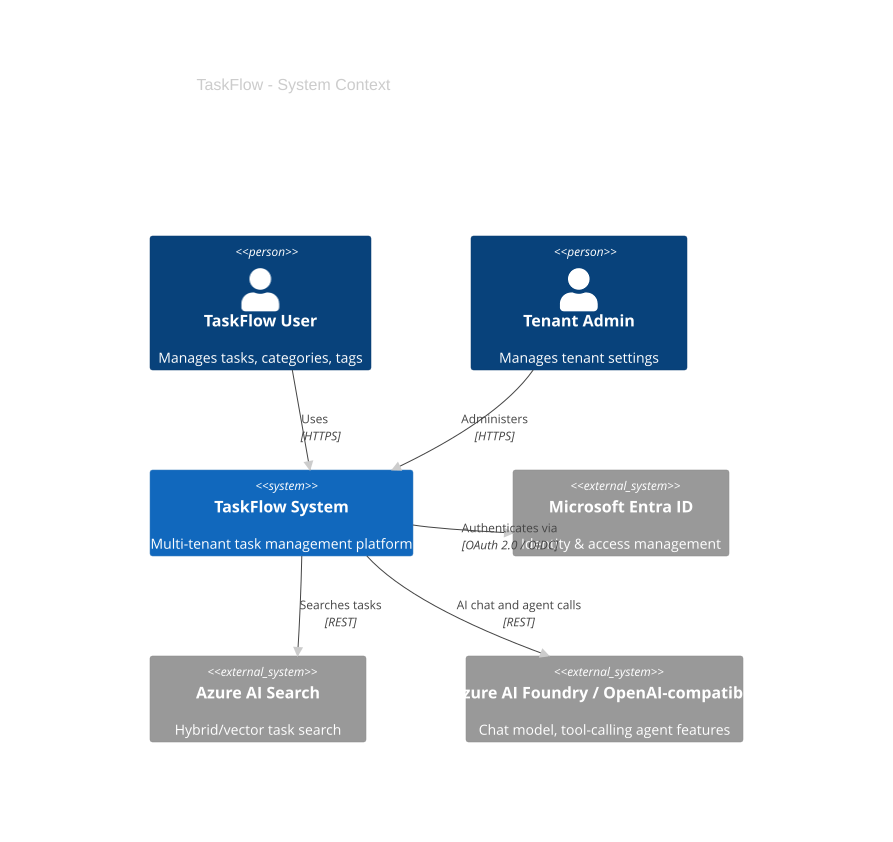
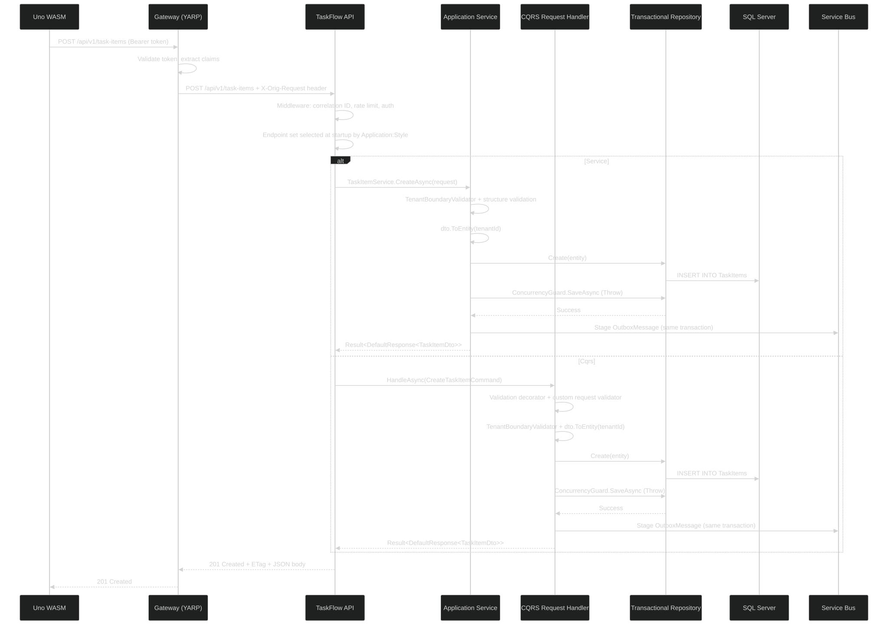
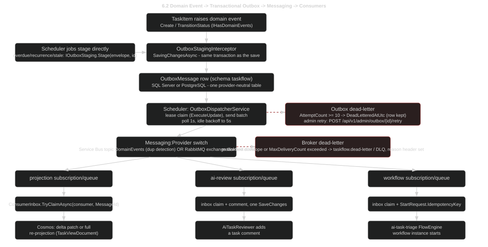
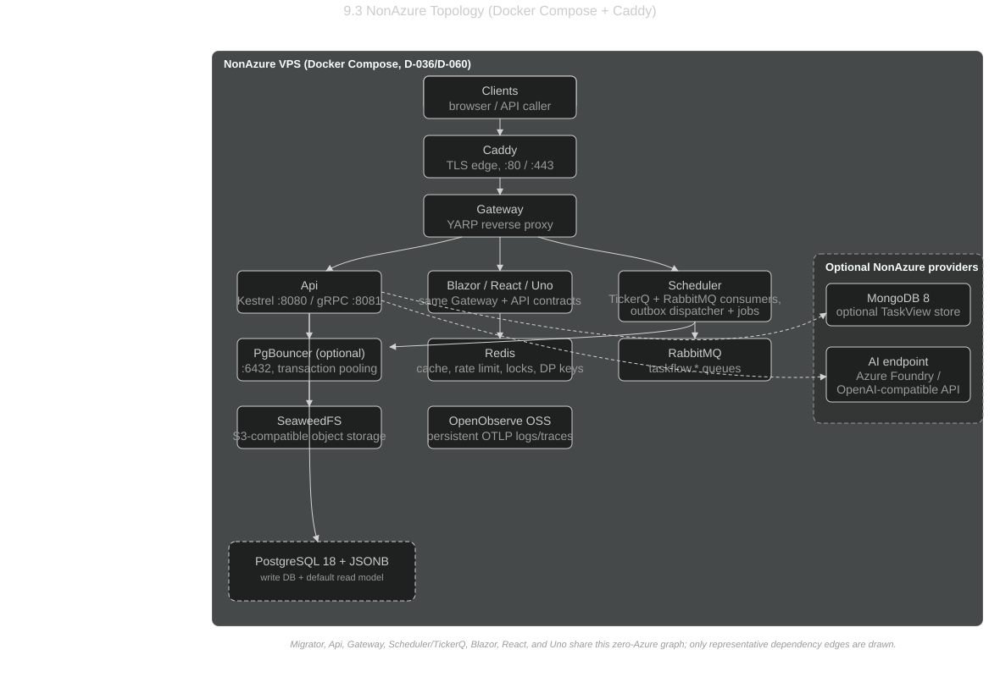

TaskFlow - Technical Design Document
Audience: Developers onboarding to the project
Last updated: June 2026
Table of Contents
- Overview
- C4 Architecture Diagrams
- Software Architecture Layers
- Service Topology
- Domain Model
- Data Flow Diagrams
- API Contract Summary
- Security Model
- Deployment Topology
- Observability
- Audit Strategy
- Testing Strategy
- UI Architecture
- Workflow Orchestration (FlowEngine)
1. Overview
TaskFlow is a multi-tenant task management reference application built on .NET 10 and .NET Aspire. It demonstrates production-grade patterns for building cloud-native distributed systems with Azure backing services.
Tech Stack
| Layer | Technology |
|---|---|
| Orchestration | .NET Aspire (local dev + cloud deployment) |
| API | ASP.NET Core Minimal APIs |
| Application Layer | Selectable Service or CQRS implementation (Application:Style; default Service) |
| Gateway | YARP Reverse Proxy |
| Background Jobs | Azure Functions (isolated worker v4), TickerQ Scheduler |
| UI | Uno Platform WASM (MVUX), Blazor WASM/Server (MudBlazor, Refit) |
| Database | SQL Server or PostgreSQL (Database:Provider; EF Core, dual DbContext, one model - see Section 5.5) |
| Cache | Redis (FusionCache with L1/L2 + backplane; also backs the tenant rate limiter) |
| Messaging | Azure Service Bus or RabbitMQ (Messaging:Provider) behind a transactional outbox + consumer inbox |
| Read Model | Azure Cosmos DB (denormalized projections) |
| File Storage | Azure Blob Storage |
| AI | Azure AI Search + Azure AI Foundry / Foundry Local via IChatClient (no-op fallback) |
| Workflow Orchestration | EF.FlowEngine - SQL state store, outbox, circuit breaker, admin API, Blazor dashboard |
| Auth | Microsoft Entra ID (External) / Scaffold mode |
| Observability | OpenTelemetry (OTLP), Aspire Dashboard |
| Testing | MSTest, Moq, NetArchTest, WebApplicationFactory, Testcontainers.MsSql/PostgreSql/RabbitMq, Aspire.Hosting.Testing, Stryker.NET, BenchmarkDotNet, NBomber, Playwright |
Design Principles
- Domain-Driven Design - Aggregates, value objects, domain events, bounded contexts
- Selectable Application Style - Same Domain, Infrastructure, UI, DTO contracts, and HTTP routes can run through the default Service layer or direct CQRS handlers
- CQRS-like - Separate read/write DbContexts; denormalized Cosmos read model alongside normalized SQL
- Multi-Tenant First - Tenant isolation at query filter, service, and authorization layers
- Event-Driven - Integration events flow through Service Bus to Azure Functions for async processing
- Config-Driven Auth - Single build, multiple deployment profiles (dev scaffold vs Entra ID prod)
- Local-First Runtime - Core infrastructure runs through Aspire emulators; AI can run fully local through Foundry Local, against real Azure AI Foundry, or as a no-op fallback with no cloud credentials
2. C4 Architecture Diagrams
2.1 System Context Diagram
Shows the TaskFlow system boundary, its users, and external dependencies.

Diagram legend: Solid lines = direct dependency. Labels describe the protocol or relationship.
2.2 Container Diagram
All deployable units and infrastructure resources with their relationships.

Diagram legend: All relationships shown as solid arrows with protocol labels. Blue containers = compute services, orange containers = data/messaging platform services, purple containers = frontend UI. Solid arrows = read/write. Dashed arrows = secondary r/w. Dotted arrows = async trigger.
2.3 Component Diagram - TaskFlow API
Internal structure of the core API service.

Diagram legend: Arrows indicate direct dependencies. Components inside the API boundary reference each other; external containers represent infrastructure backing services.
3. Software Architecture Layers

Legend: Solid blue arrows = project references. Orange implements = Infrastructure implementing Application.Contracts interfaces. Dotted arrows = DI wiring (Bootstrapper wires layers at runtime, not a compile-time reference).
Layer Responsibilities
| Layer | Projects | Responsibility | May Reference |
|---|---|---|---|
| UI | TaskFlow.Uno, TaskFlow.Uno.Core, TaskFlow.Uno.Presentation, TaskFlow.Blazor | User interfaces - Uno app head + plain SDK UI core/presentation; Blazor MudBlazor + Refit | Application.Models (shared contract) |
| Host | Api, Gateway, Functions, Scheduler | HTTP pipeline, function triggers, config | Bootstrapper |
| Bootstrapper | TaskFlow.Bootstrapper | DI composition root - wires all layers (not a layer itself; referenced by Hosts and Tests). Also owns FlowEngine registration (RegisterServices.FlowEngine.cs) and the WarmupDependencies connection-warmup startup task. |
Application, Infrastructure |
| Application | Services, Cqrs, Contracts, Models, Mappers, MessageHandlers | Use-case implementation for the selected style, validation, DTO mapping, tenant enforcement, integration event definitions. MessageHandlers also defines IWorkflowTrigger for invoking FlowEngine workflows from domain events. |
Domain |
| Domain | Domain.Model, Domain.Shared | Entities, aggregates, value objects, enums, marker interfaces | Nothing (no outward deps) |
| Infrastructure | Repositories, Data, Storage, AI, EF.CQRS, EF.AspNetCore.Reference, EF.Test.Integration | EF Core, Azure SDK implementations of Application.Contracts interfaces. EF.CQRS, EF.AspNetCore.Reference, and EF.Test.Integration are separately packaged helper candidates under Infrastructure for now. Data also owns the FlowEngine state DbContext (TaskFlowFlowEngineDbContext) and its migrations. |
Application.Contracts, Domain |
Application Style Switch
TaskFlow can run the same public API contract through either application-layer style. The switch is startup-time configuration, not per-request dispatch.
| Setting | Behavior |
|---|---|
Application:Style |
Service or Cqrs; missing/blank defaults to Service |
TASKFLOW_APPLICATION_STYLE |
Environment override used by local test runs and forwarded by Aspire to API, Scheduler, and Functions |
Service |
Registers the existing I*Service implementations and maps the service endpoint set |
Cqrs |
Registers TaskFlow.Application.Cqrs command/query handlers plus decorators and maps the CQRS endpoint set |
| Public contract | Routes, DTOs, envelopes, auth, audit, infrastructure repositories, and UI clients remain unchanged |
TaskFlow.Api contains two endpoint sets. Service endpoints inject I*Service. CQRS endpoints inject the exact IRequestHandler<TRequest,TResponse> needed by that route, construct a command/query record, and call HandleAsync directly. The avoided patterns are central request dispatchers, request buses, and generic Send() entrypoints. The reason is traceability: each route exposes the exact request and handler registration it uses, so tests and code review can follow the use case without hidden runtime routing.
src/Infrastructure/EF.CQRS is intentionally isolated as the package candidate. It provides ICommand, IQuery, IRequestHandler, request validators, validation/logging decorators, and AddDecoratedRequestHandler(...) DI helpers. The project has no TaskFlow business logic.
src/Infrastructure/EF.AspNetCore.Reference is temporarily renamed so the reference app can still consume the existing EF.AspNetCore feed package. It hosts reusable ASP.NET Core conventions: versioned API/OpenAPI registration, versioned route-group helpers, correlation ID middleware, security headers, and ProblemDetails metadata. src/Infrastructure/EF.Test.Integration hosts reusable integration-test conventions: WebApplicationFactory EF rewiring, SQL Testcontainers fixtures, Aspire health/connection-string helpers, and scoped environment-variable handling.
Service vs CQRS Tradeoffs
| Style | Pros | Cons | Best Fit |
|---|---|---|---|
Service |
Familiar, compact, fewer files, easy to scan for simple CRUD and shared workflows | Services can grow broad over time; one class may accumulate several endpoint flows | Small-to-medium CRUD modules, teams that value fewer moving parts |
Cqrs |
One request/handler per use case; endpoint-to-handler flow is explicit; custom validation/decorator pipeline is easy to test | More files and registrations; can be ceremony for simple CRUD; needs guardrails against hiding use cases behind generic dispatch | Use cases with distinct validation, branching, audit, event, or query/write behavior |
Dependency Rules (Architecture-Test Enforced)
- Domain has zero references to Application, Infrastructure, or Host layers
- Application.Services has zero references to Infrastructure or Host layers
- Application.Cqrs has zero references to Host layers or Infrastructure implementation projects; it may reference the isolated
EF.CQRSpackage candidate - Infrastructure implements
Application.Contractsinterfaces (not Domain contracts) - CQRS guardrails: avoid central request dispatchers, request buses, and generic
Send()entrypoints; one command/query maps to one handler registration so wiring remains explicit - All tenant entities implement
ITenantEntity<TenantId> - All services have corresponding interfaces in Contracts
- Entity properties use private setters (encapsulation)
4. Service Topology
A clean representation of the Aspire-orchestrated service graph (equivalent to the Aspire dashboard graph view):

Legend: Solid arrows = direct synchronous dependency ("read/write"). Dotted arrows = asynchronous/event-driven trigger (the service doesn't call directly; infrastructure triggers it via subscription or blob event). Dashed arrows = secondary read/write.
Hosted Services
| Service | Project | Purpose | Key Dependencies |
|---|---|---|---|
| API Gateway | TaskFlow.Gateway |
Auth boundary, YARP reverse proxy, claims injection | API |
| TaskFlow API | TaskFlow.Api |
Core business logic, CRUD, ETag/If-Match concurrency, cursor paging, summary/metadata/export, idempotent create, domain events staged to the outbox, FlowEngine admin REST (/api/flowengine/*), workflow JSON seeding |
SQL Server or PostgreSQL, Redis, Cosmos, Service Bus or RabbitMQ, Blob, FlowEngine state DB |
| Azure Functions | TaskFlow.Functions |
Async event processing via three Service Bus triggers (projection, ai-review, workflow) with dead-lettering; blob processing. Disabled per-trigger when Messaging:Provider=RabbitMq (the Scheduler hosts the RabbitMQ consumers instead) |
SQL Server or PostgreSQL, Cosmos, Service Bus, Blob |
| Task Scheduler | TaskFlow.Scheduler |
Cron jobs via TickerQ (overdue checks, recurring generation, stale cleanup, retention sweeps); outbox/blob-delete lease-based dispatcher workers; RabbitMQ consumer hosted services when selected | SQL Server or PostgreSQL, Redis, Service Bus or RabbitMQ |
| Uno WASM App | TaskFlow.Uno, TaskFlow.Uno.Core, TaskFlow.Uno.Presentation |
Cross-platform UI app head plus platform-agnostic services and MVUX presentation models | Gateway |
| Blazor App | TaskFlow.Blazor |
Interactive Server UI - MudBlazor, Refit client, full CRUD; also hosts the FlowEngine Dashboard + Designer pages (routes contributed by EF.FlowEngine.Dashboard via AdditionalAssemblies). Summary/metadata reads go directly to the API's internal gRPC port when configured (D-054, Section 13.3), REST through the Gateway otherwise. |
Gateway -> API (REST) + API gRPC (reads) + FlowEngine admin |
Runtime profile per host (D-047): every host above imports the shared src/Host/TaskFlow.Host.props, which sets Server GC, Concurrent GC, and DATAS (GarbageCollectionAdaptationMode=1) for the Api, Gateway, Scheduler, and Blazor (request-serving/consumer workloads), workstation GC for the short-lived TaskFlow.DatabaseMigrator job, explicit TieredPGO, and InvariantGlobalization left at its default (true, plain -chiseled base) on Gateway only, the one host with neither a culture-rendering nor a Microsoft.Data.SqlClient reason to need ICU. Blazor, Api, Scheduler, DatabaseMigrator, and Functions all override it to false on the -chiseled-extra (ICU) base: Blazor renders user-facing cultures, and the other four reach Microsoft.Data.SqlClient (via TaskFlow.Infrastructure.Data, directly or through TaskFlow.Bootstrapper), which throws NotSupportedException under invariant globalization. The Api and Gateway Dockerfiles additionally publish ReadyToRun for faster cold start under scale-out, and the Api turns on EnableRequestDelegateGenerator. A Test.Architecture test (HostRuntimeSettingsTests) enforces that every host csproj imports the shared props file, that the SqlClient-dependent hosts never declare InvariantGlobalization=true, and that every host with it set to false runs on a -chiseled-extra base image. Native AOT was evaluated for the whole application and not adopted: EF Core 10's Native AOT support is still experimental (precompiled queries only), and both TickerQ and FlowEngine are reflection-based, so neither host dependency can be trimmed or AOT-compiled cleanly today; only the dependency-free src/Packages/EF.Messaging.RabbitMq package carries IsAotCompatible=true.
5. Domain Model
5.1 Entity Relationship Diagram

Polymorphic Attachment ownership: Attachment uses a discriminator pattern (OwnerType enum + OwnerId GUID) instead of separate foreign keys. OwnerType is either TaskItem or Comment, and OwnerId points to the owning entity's Id. This avoids multiple nullable FKs and allows any entity type to own attachments.

5.2 Base Entity
All entities inherit from TaskFlowEntityBase<TId> (TaskFlow.Domain.Model, extending EntityBase<TId> from NuGet EF.Domain) with strongly typed IDs from TaskFlow.Domain.Shared. TaskFlowEntityBase<TId> implements IVersionedEntity, which provides:
| Property | Type | Purpose |
|---|---|---|
Id |
TId |
Strongly typed primary key implementing IDomainId<TId> |
Version |
long |
App-managed optimistic concurrency token (D-021), private setter. Identical shape on SQL Server and PostgreSQL; doubles as the HTTP ETag ("<Version>") - see Section 6.1 |
CreatedAtUtc / ModifiedAtUtc |
DateTimeOffset |
Written by VersionTimestampInterceptor on Added/Modified, private setters |
Concurrency token change: the former RowVersion (SQL rowversion / Postgres xmin) is replaced by the app-managed Version because a database-native token differs in type per provider, is opaque as a wire ETag, and cannot be exercised against the EF Core InMemory provider (needed for Test.Unit 412 coverage). VersionTimestampInterceptor (Infrastructure.Data/Interceptors/) increments Version from its pre-save original value and stamps both timestamps for every Added/Modified root in SaveChanges - this is the app-local fallback for EF.Domain/EF.Data package requests 1-2 (docs/plans/ef-package-requests.md).
Note: EntityBase<TId> still does not define audit-log properties (CreatedBy, UpdatedAt, UpdatedBy) - those remain separate, driven by the compliance-focused AuditInterceptor (see Section 11: Audit Strategy), distinct from the concurrency-focused CreatedAtUtc/ModifiedAtUtc above. Soft-delete (IsDeleted) is defined on individual domain entities that support it, not on EntityBase<TId>.
All tenant entities also implement ITenantEntity<TenantId> and use a composite tenant-first primary key (TenantId, Id) (D-022, EntityBaseConfiguration.HasKey) rather than a single-column Id PK - this is the SQL Server clustered index by default, and on PostgreSQL it makes every table distributable by TenantId without a future rewrite (Citus/elastic clusters require the distribution column inside the primary key). Child entities carry matching composite foreign keys (TenantId, ParentId). DTOs, HTTP contracts, events, and request-context inputs remain Guid-based and wrap/unwrap at the application boundary. This split is deliberate: domain and repository code get compile-time protection against mixing entity IDs, while public contracts stay simple for JSON serialization, OpenAPI/client generation, UI code, workflow payloads, and long-term wire compatibility.
5.3 Value Objects
| Value Object | Properties | Used By |
|---|---|---|
| DateRange | StartDate, DueDate (both DateTimeOffset?) |
TaskItem |
| RecurrencePattern | Recurrence interval, frequency, end conditions | TaskItem (EF owned type) |
5.4 Integration Events
Events are defined in TaskFlow.Domain.Shared.Events. The aggregate raises them (IHasDomainEvents); they never publish directly - OutboxStagingInterceptor stages them as OutboxMessage rows in the same save, and the Scheduler's dispatcher sends them through IIntegrationEventTransport (Service Bus or RabbitMQ, per Messaging:Provider) - see Section 6.2.
| Event | Trigger | Downstream Effect |
|---|---|---|
TaskItemCreatedEvent |
New task created | Service Bus -> Functions -> Cosmos projection |
TaskItemStatusChangedEvent |
Status transition | Service Bus -> Functions -> Cosmos projection |
TaskItemCompletedEvent |
Status -> Completed | Notifications (future) |
TaskItemRescheduledEvent |
Date range updated | Recalculation (future) |
TaskItemOverdueSuspectedEvent |
Scheduler detects overdue | Escalation (future) |
CommentAddedEvent |
New comment on task | Notifications (future) |
AttachmentUploadedEvent |
File uploaded | Metadata extraction via Functions |
5.5 Dual-Provider Data Layer
TaskFlow runs on SQL Server or PostgreSQL behind one EF Core model, with exactly one runtime branch point (D-020, D-030). TaskFlowDbProviderSelector.Resolve(IConfiguration) (Infrastructure.Data/Provider/TaskFlowDbProvider.cs) picks the provider - env var TASKFLOW_DB_PROVIDER wins over config key Database:Provider, default SqlServer - and DbContextOptionsBuilder.UseTaskFlowProvider(TaskFlowProviderOptions) is the only place that switches on it:
switch (options.Provider)
{
case TaskFlowDbProvider.SqlServer:
// UseAzureSql when the connection string targets database.windows.net, else UseSqlServer
builder.UseSqlServer(cs, sql => sql.UseCompatibilityLevel(170)
.EnableRetryOnFailure().MigrationsAssembly("TaskFlow.Infrastructure.Data.Migrations.SqlServer"));
break;
case TaskFlowDbProvider.PostgreSql:
builder.UseNpgsql(cs, npg => npg
.EnableRetryOnFailure().MigrationsAssembly("TaskFlow.Infrastructure.Data.Migrations.PostgreSql"));
break;
}
All four contexts (Trxn, Query, FlowEngine, TickerQ) and the four DatabaseMigrator design-time factories call this same extension; no other file checks the provider. TaskFlowDbContextQuery keeps its own connection string on both providers (D-027): SQL Server appends ApplicationIntent=ReadOnly for the Hyperscale HA secondary, PostgreSQL points it at the Flexible Server read replica.
UTC normalization (D-024): UtcDateTimeOffsetConverter/UtcDateTimeConverter (Infrastructure.Data/Conventions/) are registered once in TaskFlowDbContextBase.ConfigureConventions for every DateTimeOffset/DateTime property - required because Npgsql's timestamptz rejects a non-zero offset on write.
Column encryption and blind index (D-023, supersedes D-019 Always Encrypted): Infrastructure.Data/Encryption/ holds a provider-neutral IColumnEncryptor (AesGcmColumnEncryptor: AES-256-GCM, nonce(12) || ciphertext || tag(16)) plus BlindIndex (HMAC-SHA256 into a shadow column, indexed, for equality search on an otherwise-randomized encrypted column) and a ColumnEncryptionOptionsExtension wired through UseColumnEncryption/AddColumnEncryption(config, "Database:Encryption"). Config keys: Database:Encryption:{Enabled, LocalKeyBase64, BlindIndexKeyBase64, KeyVaultKeyUrl, WrappedDekBase64}. SQL Server Always Encrypted (D-019) is kept only as a documented alternative in a code comment at the converter registration (Configurations/TaskItemConfiguration.cs) - it is not implemented, because it has no PostgreSQL equivalent.
Migrations (D-025): one fresh baseline migration set per (context x provider) - six sets total - lives in two migration assemblies, TaskFlow.Infrastructure.Data.Migrations.SqlServer and ...Migrations.PostgreSql, each with Migrations/{TaskFlow,FlowEngine,TickerQ}/. TaskFlow.DatabaseMigrator's design-time factories resolve the provider the same way as runtime and apply targets in order Trxn -> FlowEngine -> TickerQ, each keeping its own migration history table even when local Aspire maps all three onto one database.
Provider-matrixed tests: env TASKFLOW_TEST_DB_PROVIDER (default SqlServer) selects which container a test run starts. Test.Support/Hosting/TestDatabaseContainer.cs wraps either an MS SQL or PostgreSQL (pgvector/pgvector:pg17) Testcontainers fixture behind one facade, consumed by Test.Integration/Infrastructure/DbContainerFixture.cs and Test.E2E/DbApiFactory.cs. CI and local acceptance run the same assemblies twice, once per provider value, rather than parameterizing individual test cases.
Relational read-model and audit-sink arms (D-038, D-039, Portable lane): ReadModel:Provider = Cosmos | Relational and Audit:Provider = AzureTable | Relational (env TASKFLOW_READMODEL_PROVIDER/TASKFLOW_AUDIT_PROVIDER) each add a relational arm behind the existing contract instead of a second contract. The relational read model is a TaskView table in the taskflow schema, PK (TenantId, Id), index (TenantId, LastModifiedUtc desc, Id desc), its JSON body a plain string column (not jsonb, to avoid the one forced provider branch HasColumnType would add); counters patch through one ExecuteUpdateAsync per call; paging uses an opaque, tenant-bound, schema-versioned keyset continuation token (Base64Url over version|tenant|LastModifiedUtc ticks|id) so TaskViewEndpoints never sees the cursor shape. The relational audit sink is keyed (TenantId, RecordedUtc, Id) with retention via ExecuteDeleteBatchedAsync. Neither arm is an ITenantEntity - the tenant id is passed explicitly, matching how the Cosmos read model already treats it as a partition key.
pgvector semantic search (D-040): Search:Provider = AzureAiSearch | PgVector | Sql (env TASKFLOW_SEARCH_PROVIDER) adds a Postgres-native similarity-search arm. PgVector requires Database:Provider=PostgreSql and fails startup immediately otherwise (loud failure, not a silent downgrade to Sql); it also fails startup if Search:PgVector:Dimensions is configured to anything other than the fixed 1536-dimension model the embedding consumer writes. TaskItemEmbedding (TenantId, TaskItemId, Embedding vector(1536), ModelId, UpdatedUtc) with an HNSW cosine index is mapped in OnModelCreating only when the active provider is Npgsql - the one new forced branch this refactor added (D-030) - and its migration lives only in the PostgreSql migration assembly. TaskItemContentChangedEvent (raised when a task's title or description actually changes value) drives a dedicated embedding consumer over its own RabbitMQ queue/Service Bus subscription, which exists in the broker topology only when Search:Provider=PgVector is selected. The Portable lane defaults Search:Provider to Sql (PgVector is opt-in even on Postgres); the Azure lane keeps its existing AzureAiSearch-when-configured default.
6. Data Flow Diagrams
6.1 Request Flow - CRUD Operation

The CQRS path is direct endpoint-to-handler invocation. Decorators are assembled by DI around the exact handler type; there is no central dispatch step.
The diagram shows POST (create); PUT/PATCH/DELETE add two endpoint filters around the same pipeline (D-021, D-031, D-032): IfMatchEndpointFilter runs first and requires an If-Match header - missing or blank returns 428 Precondition Required before the handler runs, unparseable returns 400, and If-Match: * passes as an explicit wildcard override (used by the FlowEngine connector, see Section 14.5). The handler loads the aggregate and calls ConcurrencyGuard.Require(expectedVersion, current, ...) before mutating; a mismatch throws ConcurrencyMismatchException, mapped to 412 Precondition Failed with the current ETag so the caller can retry with a fresh version. All saves go through ConcurrencyGuard.SaveAsync (OptimisticConcurrencyWinner.Throw), so a stale-write race that slips past the pre-check still surfaces as 412 via DbUpdateConcurrencyException. ETagEndpointFilter runs after the handler on every route (including GET) and sets the response ETag header from any result implementing IETagCarrier.
6.2 Event Processing Flow - Outbox to Consumers

Domain events never publish directly (D-026). TaskItem.Create/TransitionStatus raise events into an in-memory buffer (IHasDomainEvents); OutboxStagingInterceptor converts pending events into OutboxMessage rows in the same SaveChangesAsync that persisted the aggregate - so a rolled-back save stages nothing. Scheduler jobs that mutate outside a tracked aggregate (overdue, recurrence) stage directly via IOutboxStaging.Stage(envelope, deterministicId). The Scheduler's OutboxDispatcherService (every replica, lease-based, poll 1s backing off to 5s idle) claims a batch with an ExecuteUpdateAsync lease, groups by destination, and sends through IIntegrationEventTransport - Messaging:Provider selects ServiceBusEventTransport or RabbitMqEventTransport (D-034); a message poisoned past AttemptCount >= 10 is dead-lettered in place (row kept, admin retry endpoint) rather than lost. Three subscriptions/queues (projection, ai-review, workflow) fan out by EventType, each with its own broker dead-letter path for malformed envelopes or exhausted delivery attempts. Every consumer claims a ConsumerInbox row (Consumer, MessageId) before doing work (D-029), so broker at-least-once redelivery cannot double-project, double-comment, or double-start a workflow.
6.3 Attachment Upload Flow

6.4 Caching Flow - FusionCache L1/L2

FusionCache is active behind one interface, ITaskFlowCache (TaskFlow.Infrastructure.Caching, FusionTaskFlowCache) - the earlier no-op IEntityCacheProvider is deleted. GetOrSetAsync<T>(key, factory, profile) takes a CacheProfile (Metadata: L1 5m / L2 30m / fail-safe 2h; Summary: L1 5s / L2 15s / fail-safe 1m, 500ms soft factory timeout) and only caches immutable snapshots - /task-items/summary and /task-metadata. Keys render as {env}:{schemaVersion}:{tenantId:N}:{kind}[:{discriminator}]; invalidation is tag-based (RemoveByTagAsync) with per-tenant and per-entity tags (t:{tenant}, t:{tenant}:taskitem|category|tag) set by every create/update/delete call site. The Redis backplane keeps L2 and invalidation consistent across API/Scheduler replicas; a degraded backplane fails safe (stale-but-served, not down) and is observed via taskflow.cache.degraded.
7. API Contract Summary
Route versioning boundary: business/domain HTTP contracts are versioned under /api/v1/*. Operational, health, gateway, and workflow-admin surfaces are intentionally unversioned: /health/*, /alive, /healthz, /api/flowengine/*, and the Azure Functions host health route /api/health. Versioning applies to the API contract consumed by clients, not to host-management probes or third-party/admin surfaces with their own lifecycle.
7.1 Entity Endpoints (Consistent CRUD Pattern)
| Method | Route | Purpose |
|---|---|---|
POST |
/api/v1/{entity}/search |
Paged search with filters and sorting |
GET |
/api/v1/{entity}/{id} |
Get single entity by ID |
POST |
/api/v1/{entity} |
Create new entity |
PUT |
/api/v1/{entity}/{id} |
Update existing entity |
DELETE |
/api/v1/{entity}/{id} |
Delete entity |
Entities with full CRUD: task-items, categories, tags, comments, checklist-items, attachments
Entities with partial CRUD: task-item-tags (create, get, delete - no search/update)
task-items additionally exposes PATCH /api/v1/task-items/{id} - a sparse JSON-merge update (TaskItemPatchDto, omitted fields left unchanged) for targeted edits without a full PUT replace, implemented in both the Service and CQRS styles (PatchTaskItemCommand/PatchTaskItemHandler closes what was a CQRS-only gap). The AI triage workflow uses it to apply a single suggested priority via its taskflow-api self-call (see Section 14.5).
POST /api/v1/{entity}/search on task-items is cursor-only: request body TaskItemCursorSearchRequest{Filter, SortMode, PageSize<=100, Cursor?}, response CursorPage<TaskItemDto>{Data, NextCursor, HasMore} - no Total, no page number. The other entities keep offset-style SearchRequest<TFilter>/PagedResponse<T> with PageSize clamped to [1,100] (400 outside the range, never silently clamped) and Total computed only when ?includeTotal=true. POST /api/v1/{entity} accepts an optional caller-supplied Id that must be a UUIDv7 (else 400); replaying the same id with an equivalent payload returns 200 with the existing row and its ETag instead of creating a duplicate, and a divergent payload on the same id returns 409.
7.1.1 Endpoint Implementation Sets
HTTP routes and DTO contracts do not change when the application style changes. TaskFlow.Api selects one endpoint implementation set during startup:
| Style | Endpoint implementation | Dependency shape |
|---|---|---|
Service |
Endpoints/*Endpoints.cs (excluding Endpoints/Cqrs) |
Endpoints inject I*Service interfaces from Application.Contracts |
Cqrs |
Endpoints/Cqrs/* |
Endpoints inject the route-specific IRequestHandler<TRequest,TResponse> and call HandleAsync directly |
This keeps generated clients, gateway routing, UIs, auth policies, ProblemDetails behavior, and E2E tests stable while demonstrating both application-layer designs.
7.2 Special Endpoints
| Method | Route | Purpose |
|---|---|---|
GET |
/api/v1/task-items/summary |
Cached status/overdue/due-soon counts (TaskItemSummaryDto, CacheProfile.Summary) |
GET |
/api/v1/task-metadata |
Cached full category/tag lists for dropdowns (TaskMetadataDto, CacheProfile.Metadata) - replaces oversized paged metadata fetches |
GET |
/api/v1/task-items/export |
NDJSON stream (?afterId&batchSize), flushed per batch, resumable by last id, cancels cleanly on client disconnect |
POST |
/api/v1/attachments/upload |
Multipart file upload (file, ownerType, ownerId) |
GET |
/api/v1/search/tasks |
AI-powered hybrid search (?query=...&mode=hybrid&maxResults=10) |
POST |
/api/v1/agent/chat |
AI agent chat endpoint |
GET |
/api/v1/task-views |
Denormalized views (?tenantId=...&pageSize=20) - Cosmos DB or the relational TaskView table depending on ReadModel:Provider (D-038, Section 5.5); the relational arm's opaque keyset token replaces the Cosmos continuation token behind the same contract |
GET |
/api/v1/task-views/{id} |
Single task view (?tenantId=...) |
* |
/api/flowengine/* |
FlowEngine admin API - instances, registry, circuit-breakers, human tasks. Mounted via MapFlowEngineAdmin(prefix: "/api/flowengine"); see Section 14 Workflow Orchestration |
POST |
/api/v1/admin/outbox/{id}/retry |
Global-admin only: clears DeadLetteredAtUtc on a dead-lettered OutboxMessage so the dispatcher re-claims it |
GET |
/health/memory |
Anonymous memory health probe |
GET |
/health/db |
Authenticated database health probe |
GET |
/health/full |
Authenticated full probe, optionally including external dependencies |
GET |
/alive |
Liveness probe |
The Azure Functions app keeps the Functions host default /api prefix. Its business HTTP triggers mirror the public versioned contract (/api/v1/*); its host health trigger remains /api/health.
Internal gRPC parity (D-054): the /api/v1/task-items/summary, /api/v1/task-metadata, and single-item read above also exist as GetTaskItemSummary, GetTaskMetadata, and GetTaskItem on the Api's internal gRPC port (Kestrel 8081, HTTP/2, alongside REST on 8080), delegating to the same application read service so the two transports cannot drift. This is not a second public contract: only Blazor Server calls it, over service discovery, and only when Clients:UseGrpcReads resolves an address; every other caller keeps using the REST routes in the table above. See Section 13.3 for the client-side switch.
7.3 OpenAPI Documents
OpenAPI is available when OpenApiSettings:Enable=true. The JSON document route is GET /openapi/{documentName}.json; the current baseline document is GET /openapi/v1.json.
ApiContract.SupportedDocuments is the source of truth for registered OpenAPI documents. Each document is registered separately and filtered by the API Explorer group name, so simultaneous endpoint versions can coexist: a v1-only endpoint appears in /openapi/v1.json, a v2-only endpoint appears in /openapi/v2.json once v2 is added, and shared endpoints can opt into both versions. Scalar is mapped by MapScalarApiReference() when OpenAPI is enabled.
7.4 Request/Response Envelopes
DefaultRequest<TDto> -> Wraps a DTO for create/update operations
DefaultResponse<TDto> -> Single entity response; AggregateVersion is the root ETag on child responses;
IETagCarrier.ETagVersion falls back to Item.Version; IsReplay flags an idempotent-create replay
SearchRequest<TFilter> -> Offset search (non-task-item entities): Page, PageSize [1,100], SortBy, SortDirection, Filter
PagedResponse<TDto> -> Items[] + TotalCount (only when ?includeTotal=true) + pagination metadata
CursorSearchRequest<TFilter,TSortMode> -> Cursor search (task-items): Filter, SortMode, PageSize [1,100] default 50, Cursor?
CursorPage<TDto> -> Data[] + NextCursor + HasMore, no Total, no page number
EntityBaseDto.Version : long? -> every DTO carries the aggregate concurrency token used as If-Match currency
Result<T> -> Success | Failure(errors) | None (404)
Every DTO derives from EntityBaseDto and now carries Version; all mappers project it. Mutating PUT/PATCH/DELETE requests carry an If-Match header rather than a body field - see Section 6.1 for the 412/428 pipeline.
7.5 Middleware Pipeline (Order of Execution)
1. SecurityHeadersMiddleware - Adds security response headers
2. CorrelationIdMiddleware - Generates/propagates X-Correlation-Id
3. HeaderPropagation - Captures X-Correlation-Id for outgoing HttpClient calls
4. ExceptionHandler - Catches exceptions -> ProblemDetails with trace/activity metadata
5. RateLimiter - Redis-backed per-tenant sliding window (fail-open) plus tiered health limits
6. CORS - Policy TaskFlowUi for allowed origins
7. Authentication - Scaffold (dev) or JWT Bearer (Entra ID)
8. Authorization - Authenticated fallback/default policy plus named policies
9. GatewayClaimsTransformer - Rehydrates X-Orig-Request only from configured trusted gateway app id
10. OpenAPI / Scalar UI - API documentation (if enabled)
11. Health + Alive endpoints - /health/memory, /health/db, /health/full, /alive
12. Versioned Entity Endpoints - /api/v1/*
8. Security Model
8.1 Authentication Modes
| Mode | Environment | Mechanism |
|---|---|---|
| Scaffold | Development | Predictable test identity; all requests succeed; no real token validation |
| Entra ID | Production | JWT Bearer validation against Microsoft Entra External ID tenant |
The mode is config-driven (AuthMode in appsettings.json), allowing a single build to serve both environments.
8.2 Multi-Tenancy Enforcement
Tenant isolation is enforced at three levels:

- Query Filters: Every
ITenantEntity<TenantId>has an automatic EF Core query filter scoped to the current tenant. Cross-tenant data is invisible at the SQL level. - Service Validation:
TenantBoundaryValidatorchecks every service call to prevent tenant leakage, even for operations that bypass query filters. - Authorization Policies: Middleware-level enforcement before requests reach services.
8.3 Authorization Policies
| Policy | Purpose |
|---|---|
GlobalAdmin |
System-wide admin operations |
TenantMatch |
Request tenant must match authenticated user's tenant |
TenantAdmin |
Admin within a specific tenant |
StatusTransition |
Controls who can transition task statuses |
Fallback and default authorization require an authenticated principal for every endpoint unless the route is explicitly anonymous. Scaffold mode supplies a predictable local principal; production uses JWT bearer validation.
8.4 Gateway Claims Flow
User -> Gateway: Bearer {user-token}
Gateway: Validate token (Entra or scaffold)
Gateway: Acquire service-to-service token
Gateway -> API: Authorization: Bearer {service-token}
+ X-Orig-Request: Base64({ oid, tenant_id, name, roles })
API: GatewayClaimsTransformer verifies azp/appid == GatewayClaimsTransform:GatewayAppId
API: GatewayClaimsTransformer extracts X-Orig-Request
API: Sets IRequestContext (tenant, user, roles)
8.5 Rate Limiting
Per-tenant Redis sliding window (RedisRateLimiting) replaces the earlier in-process fixed window so the budget is shared across API replicas, not per-instance. Tiers come from RateLimiting:Tiers:{free|standard|premium} plus a per-tenant override map RateLimiting:TenantTiers:{tenantId}; default tier standard is 100 requests/60s. The streaming export route (Section 7.2) has its own named policy, Export, so a slow NDJSON download does not starve interactive calls. A FailOpenRateLimiter wraps the Redis limiter: if the Redis backend throws, requests are admitted rather than rejected (an outage must not become an outage-shaped self-inflicted 429), and every fail-open admission increments taskflow.ratelimit.backend_failure for alerting. Health endpoints keep separate in-process, IP-based policies: memory/alive is generous, db is tighter, and full is strict because it can include expensive dependency probes. Limited requests return 429 Too Many Requests.
8.6 Edge Protection and Hedging
Gateway edge limiter (D-050): the tenant limiter above runs at the API, after authentication; the Gateway adds a second, independent budget in front of it for traffic that has not authenticated yet. RateLimiting:Edge (EdgeRateLimitSettings) is a per-client-IP token bucket (TokensPerPeriod=200, refilled every ReplenishmentSeconds=1, QueueLimit=0 - shedding immediately with a 429 beats holding a connection open to serve it late) chained with a global concurrency limiter (MaxConcurrentRequests=1000) as the backstop against a slow downstream. It is in-process per replica by design: the real allowance is the configured budget times the replica count, a documented ceiling until replica count makes cross-replica accounting matter, at which point the partition factory swaps for the same Redis-backed sliding window TenantRateLimiterFactory already uses.
YARP cluster hardening (D-050): the api-cluster in TaskFlow.Gateway/appsettings.json now carries active health (/healthz/ready, every 10s, 5s timeout, ConsecutiveFailures policy at a threshold of 3), passive health (TransportFailureRate, 30s reactivation), PowerOfTwoChoices load balancing, and an HTTP/2 activity timeout (ActivityTimeout=00:00:30, VersionPolicy=RequestVersionOrLower). Before this refactor the cluster had none of these - a failing destination stayed in rotation until its connection actually broke.
GET-only hedging (D-051): ReadHedgingExtensions.AddReadHedging, added to the Blazor read HTTP client after the standard resilience handler (so hedging wraps one attempt inside the standard pipeline's retry, not the other way around), issues one parallel attempt when the first is slow or transiently fails (Resilience:Hedging:{Enabled, DelayMs=250, MaxHedgedAttempts=1}). Both the outcome predicate (ShouldHandle) and the delay generator are restricted to GET - Polly can trigger a hedge from either signal, and gating only one would still let a slow POST get duplicated, which for a non-idempotent write means a duplicated side effect. Cosmos cross-region hedging (AvailabilityStrategy.CrossRegionHedgingStrategy) is config-gated behind Cosmos:Hedging:Enabled and is deployment-only (it needs a live multi-region Cosmos account).
8.7 Feature Flags
Azure App Configuration plus Microsoft.FeatureManagement replace the old ad hoc AiServices:Use* kill switches with dynamic, runtime-toggleable flags (D-042). RegisterServices.AppConfiguration.cs is a no-op unless AppConfig:Endpoint (or ConnectionStrings:AppConfig) is set, so every host still boots without it; when present it registers a sentinel-key refresh (TaskFlow:Sentinel, refreshAll: true), resolves Key Vault references for secrets, and wires UseFeatureFlags. AddFeatureManagement().WithTargeting<TenantTargetingContextAccessor>() makes the caller's tenant id the targeting context, so a flag can be rolled out to specific tenants rather than only globally on/off. Locally, and whenever AppConfig:Endpoint is absent, the FeatureManagement section in each host's appsettings is the fallback source (every flag on by default).
TaskFlowFeatures (Application.Contracts) names the four flags shipped: TaskViews and Export gate their HTTP surfaces, SemanticSearch gates only mode=Semantic on the search route (keyword search keeps answering while it is off, GR-19), and AiReview gates the consumer-side AiTaskReviewer path. HTTP flags use FeatureGateEndpointFilter/RequireFeature, which answers 404, not 403, when a flag is off - a disabled surface should look absent rather than merely forbidden, so its existence does not leak to a caller probing the API. The consumer-side flag (AiReview) is checked directly against IVariantFeatureManager.IsEnabledAsync inside AiTaskReviewer, since there is no HTTP route to gate. Not yet wired into the Functions host (open item, see the compose/portable-lane watch list).
9. Deployment Topology
9.1 Local Development (Aspire)
All infrastructure runs as persistent emulators - no Azure subscription required.

Start locally:
dotnet run --project src/Host/Aspire/AppHost/AppHost.csproj
# Uno WASM and Blazor (with FlowEngine Dashboard) run separately
Service dependencies: API waits for SQL + Redis. Gateway waits for API. Functions wait for SQL + Storage.
Schema migrations (single migration owner): runtime hosts never mutate the schema on startup. A dedicated migration project, TaskFlow.DatabaseMigrator (Aspire resource taskflowmigrator), applies all migrations once and the API, Gateway, Functions, and Scheduler gate on it via .WaitForCompletion(migrator). It applies three targets in a fixed order, each keeping its own migration history table even when local Aspire maps them to the same taskflowdb database:
TaskFlowDbContextTrxn- the application (write) schema.TaskFlowFlowEngineDbContext- the FlowEngine schema (separate migration history table__EFMigrationsHistory_FlowEngine).TaskFlowTickerQDbContext- the Scheduler/TickerQ schema.
The migrator selects its provider the same way as the runtime hosts (TASKFLOW_DB_PROVIDER/Database:Provider) and applies the matching migration assembly - TaskFlow.Infrastructure.Data.Migrations.SqlServer or ...Migrations.PostgreSql (D-025, Section 5.5). Column encryption keys (Database:Encryption:*) are config, not a migrator step: Always Encrypted's CMK/CEK provisioning (D-019) is superseded and documented-only (D-023). The same migration project runs in the deployment pipeline for cloud environments.
Startup task: on boot the API runs a single IStartupTask from TaskFlow.Bootstrapper, WarmupDependencies, which opens the transactional and query DbContext instances and calls CanConnectAsync to warm connection pools. It logs-and-continues on failure so a slow or missing local DB does not block boot; it does not apply migrations.
After migrations apply, the FlowEngine workflow-seeding hosted service (AddWorkflowJsonSeeding) walks TaskFlow.Api/Workflows/*.json and upserts each definition into the registry (idempotent - skips existing versions). See Section 14.3 for the three workflows shipped.
9.2 Cloud Deployment (Azure)

infra/main.bicep takes a databaseProvider param (SqlServer default, PostgreSql) that conditionally deploys infra/modules/sql-database.bicep or the new infra/modules/postgres-flexible-server.bicep (API version 2025-08-01; Entra-only auth, azure.extensions=VECTOR, prod-only read replica via createMode: 'Replica'). SQL Server's prod profile is Hyperscale (HS_Gen5_2, zone-redundant, highAvailabilityReplicaCount: 1, readScale: Enabled); the read connection string appends ApplicationIntent=ReadOnly for the HA secondary rather than pointing at a separate server. A messagingProvider param (ServiceBus default, RabbitMq) conditionally deploys the Service Bus namespace or infra/modules/rabbitmq-container-app.bicep - a single-replica RabbitMQ container app with an Azure Files-backed mnesia volume and the management plugin exposed, documented as a dev/staging proof rather than a production broker (production would use a managed broker or a cluster).
infra/modules/redis.bicep provisions Azure Managed Redis (Microsoft.Cache/redisEnterprise + a databases child), wired as ConnectionStrings__Redis1 into the API and Scheduler for FusionCache L2/backplane and the rate limiter. infra/modules/service-bus.bicep replaces the former single function-processor subscription with three - projection, ai-review, workflow - each with a SQL filter on EventType, maxDeliveryCount: 5, and dead-lettering on expiration/filter errors; the topic itself has duplicate detection enabled. infra/modules/container-app.bicep gained an HTTP concurrency scale.rules block; prod sets Gateway/API to min 2/max 100/50 concurrent requests, Scheduler to a fixed min 2/max 2 (lease-based workers, not HTTP-scaled), Blazor to min 2/max 30. Dev keeps every host at min 0 (scale-to-zero) with no concurrency rule. Three parameter files select the profile: infra/main.bicepparam (legacy default), infra/main.dev.bicepparam, and infra/main.prod.bicepparam.
9.3 Portable Topology (Docker Compose + Caddy)
TASKFLOW_LANE = Azure | Portable (env, default Azure) seeds the default of every provider switch below; each switch's own env var or config key still wins, and no registration site reads the lane directly (D-035, HostingLaneSelector). The Portable lane is Docker Compose on a single VPS with Caddy as the TLS edge in front of the YARP gateway (D-036) - hand-written under deploy/compose/ rather than generated by an Aspire.Hosting.Docker publish, so the Compose files stay hand-tunable. Azure retains exactly two managed services in the Portable lane: Key Vault (DEK wrap, Data Protection key protection) and App Configuration (config + feature flags, Section 8.7); VPS identity is an Entra client secret or certificate consumed by EnvironmentCredential inside the existing DefaultAzureCredential chain, no code change (D-044).

Lane-vs-switch matrix (LaneDefaults.Portable, src/Host/TaskFlow.Bootstrapper/Registration/HostingLane.cs; the Azure lane is not listed because it equals each switch's pre-existing hard default):
| Switch | Config key / env | Azure lane (unchanged default) | Portable lane default |
|---|---|---|---|
| Database provider | Database:Provider / TASKFLOW_DB_PROVIDER | SqlServer | PostgreSql |
| Messaging provider | Messaging:Provider / TASKFLOW_MESSAGING_PROVIDER | ServiceBus | RabbitMq |
| Object storage | Storage:Provider / TASKFLOW_STORAGE_PROVIDER | AzureBlob | S3 (MinIO on the VPS) |
| Read model | ReadModel:Provider / TASKFLOW_READMODEL_PROVIDER | Cosmos | Relational |
| Audit sink | Audit:Provider / TASKFLOW_AUDIT_PROVIDER | AzureTable | Relational |
| Search | Search:Provider / TASKFLOW_SEARCH_PROVIDER | AzureAiSearch when configured, else Sql | Sql (PgVector is opt-in even on Postgres) |
| LLM client | AiServices:Provider / TASKFLOW_AI_PROVIDER | AzureInference when ConnectionStrings:chat exists, else FoundryLocal | OpenAICompatible |
| Data Protection persistence | DataProtection:Persistence / TASKFLOW_DATAPROTECTION_PERSISTENCE | AzureBlob when configured, else ephemeral | Redis |
| Postgres pooler mode | Database:PostgreSql:PoolerMode (config only) | None (Flexible Server pgbouncer.enabled Bicep param where available) | Transaction (PgBouncer container) |
Compose lane assets (deploy/compose/): docker-compose.yml (Caddy, Gateway, Api, Scheduler, Blazor, Migrator, Redis, otel-lgtm; PgBouncer under the pooler profile), docker-compose.override.local.yml (Postgres pgvector/pgvector:pg17, RabbitMQ, MinIO + a one-shot bucket-provisioning container, under the local profile), a Caddyfile (+ Caddyfile.local for internal TLS off) with active health checks against /healthz/ready on the Gateway and Blazor, .env.example naming every switch's env var, images.env.example for digest-pinned image tags, and a pgbouncer/ directory (edoburu/pgbouncer, transaction mode). App services run restart: unless-stopped with resource limits; only Caddy publishes 80/443. A reusable build-images.yml workflow feeds both the existing Azure deploy.yml and the new deploy-vps.yml (workflow_dispatch, deploy/rollback, plain SSH), and ci.yml runs docker compose config -q on every push plus a dispatch-gated compose-smoke job that boots the local-profile stack on ubuntu-latest and asserts /healthz/ready through Caddy plus one CRUD round trip.
Nothing in the compose/VPS path has executed on the maintainer's dev machine as of this writing - CI's compose-smoke job is the first real run of the Portable topology end to end. Known floating image tags to watch: grafana/otel-lgtm:latest, minio/minio:latest, and edoburu/pgbouncer:latest (or the PGBOUNCER_IMAGE override) are not pinned to a digest the way the TaskFlow-built images are.
10. Observability
10.1 OpenTelemetry
Configured via Aspire Service Defaults (Extensions.cs):
| Signal | Instrumentation |
|---|---|
| Traces | ASP.NET Core, HttpClient, custom spans |
| Metrics | ASP.NET Core, HttpClient, .NET Runtime, FusionCache |
| Logs | Structured logging with IncludeFormattedMessage + scopes |
| Exporter | OTLP (to Aspire Dashboard locally, Azure Monitor in cloud; otel-lgtm in the Portable lane) |
Broker trace propagation (D-053): before this refactor a trace ended at the process boundary - every async hop (outbox dispatch, a consumed message) started a new, disconnected trace. TaskFlow.Observability/Tracing/TaskFlowActivitySources.cs declares two additional ActivitySources, TaskFlow.Messaging and TaskFlow.Scheduler, registered into the OTel pipeline alongside the framework sources. MessagingTrace injects the W3C traceparent/tracestate into the outgoing message headers at the producer (ActivityKind.Producer) for both the RabbitMQ and Service Bus transports, and extracts them at the consumer (ActivityKind.Consumer, linked back to the producer span) in the Scheduler's RabbitMQ handler wrappers and the Service Bus envelope reader. Every Scheduler job execution and TickerQ job wrapper (BaseTickerQJob) also gets its own root activity, since a scheduled run has no incoming request to inherit a trace from.
Source-generated logging (D-053 enforcement): every ILogger call site under src/ goes through a [LoggerMessage]-generated delegate rather than a runtime-formatted ILogger.Log*() call (see the README Logging and Code Quality section for the EventId ranges); src/.editorconfig sets dotnet_diagnostic.CA1848.severity=error so a raw call fails the build for anything under src/ (tests stay advisory).
10.2 Health Checks
| Endpoint | Source | Purpose | Checks |
|---|---|---|---|
/healthz/live |
ServiceDefaults | Liveness (D-049) | Tag "live" only (self) - never fails on a dependency a restart cannot fix |
/healthz/ready |
ServiceDefaults | Readiness (D-049) | Tag "ready": database, outbox, scheduler, broker on consumer hosts. Cache is excluded (FusionCache degrades to L1, not a readiness failure). This is the YARP cluster's active health-check path (D-050). |
/healthz |
ServiceDefaults | Aggregate for humans and Compose healthchecks | Every registered check, regardless of tag. /readyz was removed (two names for the same concept as /healthz/ready). |
/health/memory |
API/Gateway | Cheap liveness-style probe | Memory/self checks |
/health/db |
API | Authenticated persistence probe | Checks tagged "db" |
/health/full |
API/Gateway | Authenticated full probe | Checks tagged "full"; external dependencies only when HealthChecks:EnableExternalServices=true |
/alive |
API | Simple liveness | Always returns 200 |
10.3 Correlation Tracking
CorrelationIdMiddlewaregenerates or propagatesX-Correlation-Idon every request- Correlation ID flows through: HTTP headers -> service calls -> integration events -> Function triggers -> logs
- Enables end-to-end distributed tracing across all services
10.4 Aspire Dashboard
Locally at http://localhost:17179:
- Resource graph (all services + infra)
- Structured logs with filtering
- Distributed traces (request -> service -> database)
- Metrics (throughput, latency, errors)
10.5 FlowEngine Dashboard
Hosted inside TaskFlow.Blazor via AddFlowEngineDashboard(adminApiBaseUrl: ...). Provides a separate, workflow-centric observability surface that complements the Aspire dashboard:
| Page | Purpose |
|---|---|
/workflows/registry |
Active / draft workflow definitions, versions, status |
/workflows/new |
Visual designer canvas (Z.Blazor.Diagrams) - drag-drop node editing, JSON import/export |
/workflows/run |
Manual instance start (pick a workflow, paste params, fire) |
/instances |
Running / suspended / completed / faulted instances; click-through to history |
/human-tasks |
Open human tasks, claim/approve/reject UI |
/circuit-breakers |
Per-key breaker state (closed / half-open / open) |
The dashboard talks to the API over HTTPS via the gateway (/api/flowengine/*). Page routes are contributed by the EF.FlowEngine.Dashboard assembly through Routes.razor's AdditionalAssemblies.
11. Audit Strategy
11.1 Overview
TaskFlow uses an EF Core SaveChanges interceptor pattern for entity-level auditing. The AuditInterceptor<string, Guid?> (from NuGet package EF.Data.Interceptors) intercepts the transactional DbContext and publishes audit records via the internal message bus.
Important: EntityBase<TId> does not define audit properties (CreatedAt, CreatedBy, UpdatedAt, UpdatedBy). All audit persistence flows through the interceptor -> message bus -> repository pipeline described below.
11.2 Audit Flow

The IInternalMessageBus uses a System.Threading.Channels background task. The interceptor enqueues the audit message and returns immediately, so SaveChangesAsync() is not blocked by audit persistence.
11.3 AuditLogTableEntity Schema
| Field | Type | Description |
|---|---|---|
Id |
string |
Unique audit record ID |
AuditId |
string |
Correlation ID grouping related changes |
TenantId |
string |
Tenant identifier |
EntityType |
string |
CLR type name of the audited entity |
EntityKey |
string |
Primary key of the audited entity |
Action |
string |
Insert, Update, or Delete |
Status |
string |
Outcome status |
StartTimeTicks |
long |
Operation start (ticks) |
ElapsedTimeTicks |
long |
Duration (ticks) |
RecordedUtc |
DateTimeOffset |
When the audit was recorded |
Metadata |
string |
Serialized property changes / extra context |
Error |
string |
Error details (if failed) |
Partition/Row key strategy: PartitionKey = tenant ID (or "_system" for non-tenant operations); RowKey = reverse-ticks for newest-first queries.
11.4 Fallback
When Azure Table Storage is unavailable (e.g., local dev without emulator), the DI container registers NoOpAuditLogRepository, which silently discards audit entries.
FlowEngine outbox is a separate concern. The AuditInterceptor audits application entities (TaskItem, Comment, etc.) and writes to Azure Table Storage. FlowEngine has its own outbox (flowengine.Outbox) that stages message / integration / agent side effects produced by workflow nodes; it is persisted by the same SaveChangesAsync that writes the workflow execution row (atomic save+enqueue - see Section 14.4). There are now three non-overlapping pipelines: app-side compliance history goes through the audit pipeline above; app-side domain events (TaskItem created/status-changed/completed) go through TaskFlow's own OutboxMessage table for durable Service Bus/RabbitMQ delivery (Section 6.2); workflow-side mutations go through the FE outbox described here.
11.5 Key Source Files
| File | Purpose |
|---|---|
TaskFlow.Bootstrapper/Registration/RegisterServices.Database.cs |
Registers AuditInterceptor on Trxn DbContext |
TaskFlow.Application.MessageHandlers/AuditHandler.cs |
Handles audit messages from internal bus |
TaskFlow.Application.Contracts/Storage/IAuditLogRepository.cs |
Repository contract |
TaskFlow.Infrastructure.Storage/AuditLogRepository.cs |
Azure Table Storage implementation |
TaskFlow.Infrastructure.Storage/AuditLogTableEntity.cs |
Table entity mapping |
TaskFlow.Infrastructure.Storage/NoOpAuditLogRepository.cs |
No-op fallback |
12. Testing Strategy
12.1 Test Pyramid

12.2 Test Projects
| Project | Purpose | Value | Primary Tools |
|---|---|---|---|
| Test.Unit | Pure-CPU verification of domain logic, DTO <-> entity mapping, application service and CQRS handler success/failure/conflict paths, custom CQRS validation, and infrastructure-free application behavior. | Fastest feedback loop - millisecond runs, zero infrastructure. Catches regressions in pure logic before slower suites are touched. | MSTest, Moq, EF Core InMemory provider |
| Test.UI | Fast headless UI verification for TaskFlow.Uno.Core UI services/client wrappers and TaskFlow.Uno.Presentation MVUX models, state/feed behavior, and presentation commands. Never references the TaskFlow.Uno Uno.Sdk app head. |
Keeps UI logic fast and platform-agnostic while preserving category semantics: UI for the lane, Presentation for MVUX-specific tests. |
MSTest, Moq, Uno Extensions Reactive/Navigation |
| Test.Mutation | Focused MSTest project for Stryker.NET runs against selected domain files (TaskItem.cs, TaskItemStatusTransitionRule.cs). Samples assert boundary values, failure messages, status transitions, optional-link updates, and idempotent child collections. |
Demonstrates mutation testing without running the full solution suite. Stryker verifies that assertions kill comparison, boolean, string, and collection-behavior mutants in the configured domain scope. | MSTest, Stryker.NET |
| Test.Endpoints | Drives every HTTP endpoint through the full ASP.NET Core pipeline in both application styles and asserts status codes (200/201/400/404/409/422), envelopes, ProblemDetails shapes, and AI endpoint contracts with fake clients. | Confirms the wire contract stays identical across service endpoints and CQRS endpoints without paying for real infrastructure or live model calls. | MSTest, Microsoft.AspNetCore.Mvc.Testing (WebApplicationFactory), EF Core InMemory |
| Test.Architecture | Asserts compile-time layering and naming rules: Domain has zero outward references; Application.Services cannot reference Infrastructure or Hosts; Application.Cqrs has no Host or Infrastructure implementation dependency; CQRS avoids central request dispatchers, request buses, and generic Send() entrypoints; every tenant entity implements ITenantEntity<TenantId>; services have matching I* interfaces; entity setters are private. |
Architectural drift is caught by CI rather than by a future code review. Rules are expressed in fluent C#, run with dotnet test, and travel with the code instead of living in a wiki. |
MSTest, NetArchTest.Rules |
| Test.Integration | Component-tier verification of one class against one real store via standalone Testcontainers (SQL Server + Azurite) started in parallel by IntegrationTestSetup - no Aspire graph. Covers EF migrations, repository CRUD with paging, the tenant query filter, M:N navigation, the domain-event projection pipeline (SQL -> projection service -> in-memory view), and the audit-repository round-trip to Azurite Table Storage. Also boots the real TaskFlow.Api host in-process against the SQL container (FlowEngineWorkflowApiFactory, isolated catalog) and drives the two shipped FlowEngine workflows end-to-end through the background engine + public API, asserting the real DB side effects of their taskflow-api self-calls (priority patched / child tasks created). |
Fast store-fidelity tests that run without the full mesh; SQL and Azurite come up independently so a SQL-only test never pays an Azurite/Functions startup. | MSTest, Testcontainers.MsSql, Testcontainers.Azurite, Microsoft.AspNetCore.Mvc.Testing, EF.IntegrationTesting, Azure.Data.Tables |
| Test.Aspire | Mesh-tier verification of cross-service workflows by booting the Aspire AppHost in-process: SQL Server, Redis, Service Bus emulator, Azure Table Storage, API, Gateway, Blazor, and every optional local host/tool the harness can prove runnable. Covers app-surface health, API and Function audit pipelines, plus Azure Foundry smoke when Azure config is present. The graph starts lazily on the first mesh class via AspireTestHost.EnsureStartedAsync and is torn down once by AspireMeshLifecycle; every class is [DoNotParallelize]. |
Highest-fidelity tests that still run on a developer laptop, isolated from the fast component tier so the graph boot is paid only when a mesh test runs. The mesh is RID-free and forces AiServices:DisableFoundryLocal=true; local model smoke lives in Test.FoundryLocal. Azure Foundry tests return inconclusive when no Azure provider is exposed. Capability probes still gate React, Uno, and Functions because those hosts require local assets or tools. |
MSTest, Aspire.Hosting.Testing (DistributedApplicationTestingBuilder), EF.IntegrationTesting, Azure.Data.Tables |
| Test.FoundryLocal | RID-bound live smoke project for the bootstrapper-owned Microsoft.AI.Foundry.Local path. Boots TaskFlow.Api directly, checks GET /api/v1/ai/status for provider: local, then covers chat, no-tool agent chat (AgentChatRequest.UseTools=false maps to ChatToolMode.None), and one safe write-adjacent AI demo. |
Keeps native Foundry Local assets out of RID-free WAF/Aspire tiers and prevents live local tests from passing green on no-op. Tests are inconclusive only when the local runtime is missing or undiscoverable. Installed-but-broken runtime, provider mismatch, no-op fallback, or live endpoint timeout is failure. | MSTest, Microsoft.AspNetCore.Mvc.Testing, EF Core InMemory, Microsoft.AI.Foundry.Local |
| Test.E2E | Multi-endpoint workflow tests (create -> search -> update -> delete) against a real SQL Server container in both application styles. These cover cases where the InMemory provider's missing semantics (FK constraints, projection plans, concurrency tokens) would hide bugs. | Bridges Test.Endpoints (fast, in-memory) and Test.Integration (full AppHost). The SQL container fixture and options factory come from EF.Test.Integration, so E2E tests only choose the application style and database backend. |
MSTest, WebApplicationFactory, EF.Test.Integration |
| Test.Load | NBomber HTTP scenarios - task-search throughput and CRUD generation - with assertions on success rate (>= 95 %) and P99 latency (< 2 s). Manual reports write under tests/Test.Load/load-reports. |
Catches pre-prod throughput regressions and gives a reproducible perf baseline. Tests are [Ignore]'d by default (manual run) so they never gate CI on infra availability. |
MSTest, NBomber, NBomber.Http |
| Test.Benchmarks | BenchmarkDotNet console runner exercising hot-path mappers (ToDto, ToEntity) and application-style endpoint paths (SearchTaskItemsAsync, CreateTaskItemAsync) with [MemoryDiagnoser]. |
Quantifies mapping allocation cost and compares Service vs CQRS endpoint overhead behind the same HTTP contract. | BenchmarkDotNet, WebApplicationFactory, EF Core InMemory |
| Test.Support | TaskFlow-specific test infrastructure: a thin WebApplicationFactoryBase<TProgram, TTrxn, TQuery> adapter over EF.Test.Integration, fluent entity builders (CategoryBuilder, TaskItemBuilder, CommentBuilder, TagBuilder), shared constants. |
Shared DI-rewiring boilerplate lives in the package candidate; Test.Support keeps only TaskFlow-specific startup-task removal and fixture data. | EF.Test.Integration, EF Core InMemory |
| Test.PlaywrightUI | Browser-driven UI tests in the solution. MSTest starts the Aspire AppHost, runs C# page-object smoke for Gateway + Blazor, then runs TypeScript Playwright projects for Blazor, React, and Uno when their prerequisites are present. Runner executes TypeScript projects one process at a time with bounded project/test timeouts. | The only suite that actually clicks the UI. Blazor and React use DOM/ARIA selectors. Uno Skia WASM uses canvas-first helpers: wait for painted canvas, click stable app chrome, compare visual fingerprints. Do not assert Uno text through DOM selectors because Skia text is pixels, not accessible DOM. | MSTest, Microsoft.Playwright, TypeScript @playwright/test |
| Test.Mobile | Opt-in native mobile UI smoke for Uno Android/iOS heads. Tests validate Appium sessions but do not launch emulators or Appium from test methods. run-mobile-tests.ps1 owns Android APK build, emulator readiness, Appium readiness, and enabled dotnet test. |
Default solution runs report Inconclusive when TASKFLOW_MOBILE_TESTS_ENABLED is not true. Explicit mobile lane fails fast for missing APK, emulator, Appium, or UiAutomator2. Coverage stays on stable launch, first-viewport accessibility, and native text entry; deep CRUD and long-scroll persistence remain in API, integration, unit, and Playwright lanes. |
MSTest, Appium.WebDriver, Appium UiAutomator2 |
| Test.Integration.FlowEngine | Workflow-definition validity tier for every JSON file shipped under TaskFlow.Api/Workflows/. Asserts JSON -> WorkflowDefinition deserialization, WorkflowDefinitionValidator.ValidateAndThrow passes (unknown node types, dangling edges, malformed schemas), in-memory IWorkflowRegistry round-trip preserves node count + status, WorkflowDefinitionBuilder.FromJson hydrates id/version/nodes, and the copy-on-build glob does not silently drop files. |
Catches authoring mistakes that would otherwise only surface at first-instance-start in dev. Runs without any Aspire stack or Docker - uses EF.FlowEngine.Testing's in-memory registry. Fast (sub-second) and is the first line of defense on every PR that touches a workflow JSON. |
MSTest, EF.FlowEngine.Testing (InMemoryWorkflowRegistry) |
12.2.1 Application Style Coverage
Endpoint and E2E workflow suites run against both ApplicationStyle.Service and ApplicationStyle.Cqrs by overriding Application:Style/TASKFLOW_APPLICATION_STYLE in the test host. An EndpointStyleFixture drives most Test.Endpoints cases through both styles from one test body ([DataRow("Service")]/[DataRow("Cqrs")]), calling Assert.Inconclusive when TASKFLOW_APPLICATION_STYLE is already pinned by the environment, since the env var wins over config and a pinned run cannot exercise the other style. The same HTTP routes, request/response envelopes, ProblemDetails shapes, auth behavior, and database side effects must pass in both modes, including the concurrency contract (missing/malformed/wildcard/stale If-Match -> 428/400/pass/412 with ETag), idempotent-create replay/conflict, cursor page-through (tamper, cross-tenant, sort-mode mismatch -> 400), and the summary/metadata/export endpoints.
CQRS-specific unit tests cover handler behavior, the custom IRequestValidator<TRequest> pattern, validation failure response mapping, and decorator order. Architecture tests guard the CQRS boundary: no central request dispatcher, no request bus, no generic Send() entrypoint, no Host dependency, no Infrastructure implementation dependency, and one request record per handler registration.
ApplicationStyleBenchmarks extends that parity check into performance. It creates isolated in-memory API hosts for Service and Cqrs, disables rate-limit noise through test configuration, seeds identical task data, then benchmarks search and create endpoints through the same HTTP routes.
12.2.2 Mutation Testing Scope
Test.Mutation is intentionally narrow. Its stryker-config.json mutates TaskFlow.Domain.Model only for TaskItem.cs and TaskItemStatusTransitionRule.cs, filters tests to TestCategory=Mutation, and emits progress, cleartext, and HTML reports. This makes the sample fast enough for local learning while keeping the report focused on domain invariants rather than framework wiring.
Run from repo root:
dotnet tool restore
dotnet test tests/Test.Mutation/Test.Mutation.csproj
Run Stryker from tests/Test.Mutation:
dotnet tool run dotnet-stryker
12.3 Testing Tools
| Tool | Role | What It Provides |
|---|---|---|
| MSTest | Test runner (Microsoft) | [TestClass] / [TestMethod] / [TestCategory], Assert.*, parallelization (MSTestParallelize{Assembly,TestClasses}), [AssemblyInitialize] / [AssemblyCleanup] for shared fixtures. |
| Moq | Mocking framework | Lambda-based fakes for service interfaces (Mock<IFoo>); used in Test.Unit to isolate services from repositories and external clients. |
| NetArchTest.Rules | Architecture assertion DSL | Fluent rules over reflected assemblies - Types.InAssembly(asm).ShouldNot().HaveDependencyOnAny(...).GetResult(). Failure surfaces the offending types. Run as ordinary MSTest cases. |
| Stryker.NET | Mutation testing | Mutates selected source files, reruns the matching MSTest cases, and reports killed, survived, no-coverage, and compile-error mutants. Configured through tests/Test.Mutation/stryker-config.json. |
| BenchmarkDotNet | Micro-benchmark harness | Warmup / iteration control, statistical noise rejection, [MemoryDiagnoser] for GC allocations, console summary tables. Run as dotnet run -c Release --project tests/Test.Benchmarks. |
| NBomber + NBomber.Http | Load-test framework | Scenario.Create(...), Simulation.Inject(rate, interval, during) for arrival-rate load, percentile assertions on latency / success. HTTP helpers for request building. |
Microsoft.AspNetCore.Mvc.Testing |
In-process API host (WebApplicationFactory) | Boots Program.cs against a TestServer - full DI, middleware, routing, model binding - without Kestrel. Returns an HttpClient and exposes the IServiceCollection for test-time service replacement. |
Testcontainers (Testcontainers.MsSql) |
Ephemeral Docker containers | Spawns SQL Server 2025 in a throwaway container per fixture; tests use the real engine with no manual install. Disposes the container automatically. |
| Aspire.Hosting.Testing | AppHost in-process orchestration | DistributedApplicationTestingBuilder.CreateAsync(typeof(AppHostProgram)) boots the whole resource graph (SQL, Service Bus, Storage, Functions) in one call. app.GetConnectionStringAsync(...) and app.CreateHttpClient(...) return wired clients. |
Playwright (@playwright/test) |
Cross-browser automation | Headless Chrome/Firefox/WebKit, auto-waiting locators, screenshot: "only-on-failure", trace: "on-first-retry". Driven from a TypeScript playwright.config.ts. |
12.4 Test.Support and EF.Test.Integration
EF.Test.Integration centralizes the reusable WebApplicationFactory plumbing that would otherwise be re-implemented in every HTTP test project. Test.Support keeps a TaskFlow-specific adapter so tests do not need to know the package project's startup-task convention:
public abstract class WebApplicationFactoryBase<TProgram, TTrxnContext, TQueryContext>
: EfWebApplicationFactoryBase<TProgram, TTrxnContext, TQueryContext>
where TProgram : class
where TTrxnContext : DbContextBase<string, Guid?>
where TQueryContext : DbContextBase<string, Guid?>
{
protected override string? StartupTaskServiceTypeFullName => "TaskFlow.Bootstrapper.IStartupTask";
}
| Concern | How it's handled |
|---|---|
| Hosted services | EF.Test.Integration strips IHostedService registrations so tests never start TickerQ jobs, Service Bus listeners, or background workers by accident. |
| Startup tasks | Test.Support sets the TaskFlow startup-task service type (TaskFlow.Bootstrapper.IStartupTask) so the base factory removes the WarmupDependencies startup task from WebApplicationFactory hosts. |
| Pooled DbContext | EF.Test.Integration removes pooled context descriptors, scoped factories, IDbContextFactory, audit interceptors, and connection no-lock interceptors. |
| DbContext construction | EfTestDbContextFactory<T> builds contexts via reflection, side-stepping required members on DbContextBase. |
| DB choice | Subclass overrides BuildTrxnOptions() / BuildQueryOptions(); DbContextOptionsFactory provides InMemory and SQL Server helpers. |
Concrete subclasses are tiny:
// Test.Endpoints - fast, in-memory
public sealed class CustomApiFactory
: WebApplicationFactoryBase<Program, TaskFlowDbContextTrxn, TaskFlowDbContextQuery>
{
private readonly string _dbName = $"TestDb_{Guid.NewGuid()}";
protected override DbContextOptions BuildTrxnOptions() =>
new DbContextOptionsBuilder<TaskFlowDbContextTrxn>().UseInMemoryDatabase(_dbName).Options;
protected override DbContextOptions BuildQueryOptions() =>
new DbContextOptionsBuilder<TaskFlowDbContextQuery>().UseInMemoryDatabase(_dbName).Options;
}
// Test.E2E - real SQL via EF.Test.Integration
public sealed class SqlApiFactory
: WebApplicationFactoryBase<Program, TaskFlowDbContextTrxn, TaskFlowDbContextQuery>
{
private static readonly MsSqlContainerFixture Sql = new();
public static Task StartContainerAsync() => Sql.StartAsync();
protected override DbContextOptions BuildTrxnOptions() =>
DbContextOptionsFactory.BuildSqlServerOptions<TaskFlowDbContextTrxn>(Sql.ConnectionString);
protected override DbContextOptions BuildQueryOptions() =>
DbContextOptionsFactory.BuildSqlServerOptions<TaskFlowDbContextQuery>(Sql.ConnectionString);
}
Why a package candidate: every HTTP test project (Endpoints, E2E) needs the same surgical DI rewiring. Centralising it in EF.Test.Integration means a fix for an interceptor or pooled-context bug applies to all suites and can be reused by other solutions.
WebApplicationFactory itself
Microsoft.AspNetCore.Mvc.Testing.WebApplicationFactory<TProgram> boots the application's Program.cs against an in-memory TestServer. The full ASP.NET Core pipeline runs (auth, middleware, routing, endpoint binding, exception handling, ProblemDetails) but no socket is opened - calls go through factory.CreateClient(), an HttpClient wired to the TestServer. The factory exposes ConfigureWebHost(...) so tests can replace services in the same DI container the host uses, which is how this codebase swaps SQL Server for InMemory or container-backed SQL.
12.5 Choosing the Right Host: WebApplicationFactory vs Testcontainers vs Aspire.Hosting.Testing
The three approaches are complementary, not competing - pick by the boundary you want to test:
| Aspect | WebApplicationFactory | Testcontainers | Aspire.Hosting.Testing |
|---|---|---|---|
| What it boots | One ASP.NET Core app in-process | One Docker container per resource (SQL, Redis, etc.) | The whole AppHost graph in-process - every service + every backing resource Aspire knows about |
| Networking | None (TestServer) | Real TCP via Docker | Real TCP between Aspire-managed services |
| Process model | Single test process | Test process + N Docker containers | Test process + Aspire orchestrator + N containers / emulators |
| Startup cost | < 1 s | Seconds (container pull / start) | Tens of seconds (whole graph) |
| DI override | Trivial - same IServiceCollection |
N/A (configure container, then connection-string into your code) | Limited - you get connection strings & HTTP clients; you don't reach inside other services |
| Test isolation | Per-factory instance | Per-fixture container | Shared via [AssemblyInitialize] (one Aspire app per test assembly) |
| Used in this repo | Test.Endpoints, Test.E2E (composed with Testcontainers) |
Test.E2E (SqlApiFactory), Test.Integration (SqlContainerFixture + AzuriteContainerFixture) |
Test.Aspire (AspireTestHost) |
When to reach for which:
- WebApplicationFactory - endpoint contract tests, ProblemDetails shapes, auth / authz routing, anything where the API is the system under test and the database layer can be substituted.
- Testcontainers - workflows that depend on real RDBMS semantics (FK cascades, optimistic concurrency, EF projection plans) but only need one backing service.
- Aspire.Hosting.Testing - multi-service workflows: API publishes a domain event -> Service Bus -> Function consumes -> Cosmos projection -> Azure Table audit row appears. No other tool wires that graph for you with a one-liner.
DistributedApplicationTestingBuilder.CreateAsync(typeof(AppHostProgram)) reflectively loads the AppHost's Program type and invokes its Main against a builder configured for testing. The resulting DistributedApplication exposes GetConnectionStringAsync(name) and CreateHttpClient(serviceName) to talk to named Aspire resources. The TaskFlow test graph includes API, Gateway, and Blazor by default; adds React when Node + Vite dependencies are present; adds Uno WASM when built browser assets are present; keeps SQL/Redis/Storage/Service Bus isolated; skips Cosmos and Scheduler; and includes Functions only when Azure Functions Core Tools is available.
Aspire test-host best practices - AspireTestHost codifies the canonical recipe from learn.microsoft.com/dotnet/aspire/testing:
- Bound every async Aspire call with
.WaitAsync(DefaultTimeout, ct)(build, start,GetConnectionStringAsync,WaitForResourceHealthyAsync) so a hung container or stuck DCP step fails fast instead of hanging the run. - Gate test work on
app.ResourceNotifications.WaitForResourceHealthyAsync(name, ct)- a resource reachingRunningdoes not mean it accepts connections (SQL warm-up, Functions cold-start, Azurite first request). - Pass parameters via
configureBuilder: (appOptions, hostSettings) => hostSettings.Configuration["Parameters:sql-password"] = ...instead of mutating process env vars; the AppHost picks them up through normalIConfigurationbinding. - Keep harness-only state internal:
TASKFLOW_ASPIRE_TESTINGselects isolated test-mode resources, andTASKFLOW_ASPIRE_FUNCTIONS_AVAILABLEis set only after the harness findsfunc.exe. - Add optional app-facing hosts by capability, not opt-in:
TASKFLOW_ASPIRE_REACT_AVAILABLEandTASKFLOW_ASPIRE_UNO_WASM_AVAILABLEare set by the harness after checking local prerequisites. - Keep live Foundry coverage split:
Test.Aspireruns Azure Foundry smoke only when Azure config is present. It never requests Foundry Local; the RID-boundTest.FoundryLocalproject owns local model smoke. The no-op fallback stays covered in unit and endpoint tests. - Set
appOptions.DisableDashboard = true(default in the testing builder, but explicit beats implicit). - Quiet framework chatter with
builder.Services.AddLogging(l => { l.SetMinimumLevel(Information); l.AddFilter("Microsoft.AspNetCore", Warning); l.AddFilter("Aspire.", Warning); }).
Component vs mesh split - the three single-store classes (MigrationAndRepositoryTests, DomainEventPipelineTests, AuditLogRepositoryAzuriteTests) live in Test.Integration and run on standalone Testcontainers (SQL + Azurite) via IntegrationTestSetup, never booting the Aspire graph. Multi-resource HTTP pipelines, app-surface checks, and Aspire-backed AI smoke tests live in Test.Aspire and boot the full AppHost graph lazily via AspireTestHost.EnsureStartedAsync. Keeping them in separate assemblies means the fast component tier never pays the mesh startup, and the mesh tier boots once per run only when a mesh test executes.
12.6 Test.PlaywrightUI
A solution-included Playwright test project that drives the running UI and Gateway in a real browser. dotnet test tests/Test.PlaywrightUI/Test.PlaywrightUI.csproj starts the Aspire AppHost in test mode, exposes endpoint URLs through environment variables, runs the stable C# Gateway/Blazor smoke path, and then invokes the TypeScript Playwright projects for Blazor, React, and Uno when npm install has been run.
Keep C# page objects focused on the stable smoke path:
- Gateway root and
/alivemarker checks. - Blazor
/taskshappy path: page heading, MudTable shell, search field, and New Task action.
React stays DOM/ARIA based in TypeScript. Uno Skia WASM must not use DOM text or role assertions for app text because rendered text is pixels. Use canvas-first helpers instead: wait for a painted canvas, click stable app chrome coordinates, and compare visual fingerprints for navigation or surface changes. Uno is selected by the .NET adapter unless TASKFLOW_WASM_TESTS_ENABLED=false; direct npm run test:uno remains available when a target is already running.
Project layout
Test.PlaywrightUI/
--- Test.PlaywrightUI.csproj # MSTest + Microsoft.Playwright adapter, included in TaskFlow.slnx
--- GatewayBlazorSmokeTests.cs
--- PageObjects/
--- GatewayPageObject.cs
--- BlazorTaskListPageObject.cs
--- package.json # @playwright/test latest
--- playwright.config.ts # Three projects: 'blazor', 'react', and 'uno'
--- tests/
- --- blazor/task-crud.spec.ts
- --- react/
- --- task-crud.spec.ts
- --- theme-and-navigation.spec.ts
- --- uno/
- --- task-crud.spec.ts
- --- taskflow-task-list-regression.spec.ts
- --- taskflow-ui.spec.ts
--- utils/
--- blazorTestUtils.ts # MudBlazor-aware helpers (.mud-table, .mud-dialog, ...)
--- reactTestUtils.ts
--- unoTestUtils.ts
Three browser projects, configured in playwright.config.ts:
| Project | baseURL |
Tests against |
|---|---|---|
blazor |
PLAYWRIGHT_BLAZOR_URL or https://localhost:7201 |
Blazor MudBlazor app |
react |
PLAYWRIGHT_REACT_URL, TASKFLOW_REACT_BASE_URL, or http://localhost:5178 |
React TypeScript app |
uno |
PLAYWRIGHT_UNO_URL or https://localhost:7069 |
Uno Platform WASM app |
The C# Gateway smoke uses PLAYWRIGHT_GATEWAY_URL when set; otherwise the MSTest host fills it from the Aspire taskflowgateway endpoint. The adapter fills PLAYWRIGHT_BLAZOR_URL from Aspire, fills PLAYWRIGHT_REACT_URL when local Vite prerequisites are present, and fills PLAYWRIGHT_UNO_URL from the Aspire-hosted Uno WASM host unless a caller supplied an override. TypeScript projects run one process at a time with TASKFLOW_PLAYWRIGHT_PROJECT_TIMEOUT_SECONDS and TASKFLOW_PLAYWRIGHT_TEST_TIMEOUT_SECONDS escape hatches. All TypeScript projects use Desktop Chrome, ignore HTTPS errors where needed, capture screenshots on failure, and record traces on first retry. Use serial mode only for workflows that intentionally share browser state.
Prerequisites
For dotnet test, the test project starts AppHost itself. You still need browser binaries:
dotnet build tests/Test.PlaywrightUI/Test.PlaywrightUI.csproj
powershell -NoProfile -File tests/Test.PlaywrightUI/bin/Debug/net10.0/playwright.ps1 install chromium
To run the TypeScript projects through the MSTest adapter or by npm, install Node dependencies once:
cd tests/Test.PlaywrightUI
npm install
npx playwright install --with-deps chromium
For direct npm run test:* commands, the full vertical slice must already be running:
- AppHost -
dotnet run --project src/Host/Aspire/AppHostboots SQL, Service Bus, Storage, API, Gateway, Blazor, React, Uno host, and seed data. - UI - depending on the project being tested:
- Read Blazor and React URLs from the Aspire dashboard, or set the Playwright URL overrides above.
- Build Uno WASM assets before driving the Uno host if
net10.0-browserwasmoutput is missing.
Running
dotnet test tests/Test.PlaywrightUI/Test.PlaywrightUI.csproj
cd tests/Test.PlaywrightUI
npm install
npm run test:blazor # Blazor project only
npm run test:react # React project only
npm run test:uno # Uno project only
npm run test # All browser projects
npm run test:full:fast # No retries, max 4 failures, 120 s timeout - for local triage
How a test reads. blazorTestUtils.ts encodes MudBlazor's selectors so specs stay readable:
await waitForApp(page); // GET /tasks, wait for heading
await navigateToNewTask(page); // click "New Task" -> wait for editor
await fillTextField(page, "Title", uniqueTitle("E2E-Create"));
await selectOption(page, "Status", "In Progress"); // MudSelect popover dance
await clickSave(page);
await expectSnackbar(page, "saved"); // .mud-snackbar
await expectTaskInTable(page, taskTitle); // .mud-table-body
What this catches. Server-side suites cannot observe binding errors, missing @onclick wiring, broken MudDialog renders, Uno XAML resource errors, or the dialog-confirm-then-API-call sequence. Playwright drives the entire stack the user touches - UI, Gateway, API, database - so any broken link in that chain surfaces as a failed step with a screenshot and trace.
12.7 Running Tests
# CI default gate (fast, no Docker)
dotnet test tests/Test.Unit/Test.Unit.csproj
dotnet test tests/Test.UI/Test.UI.csproj
dotnet test tests/Test.Architecture/Test.Architecture.csproj
dotnet test tests/Test.Endpoints/Test.Endpoints.csproj
dotnet test tests/Test.Integration.FlowEngine/Test.Integration.FlowEngine.csproj
# E2E tests (Docker required - Testcontainers SQL)
dotnet test tests/Test.E2E/Test.E2E.csproj
# Component integration tests (Docker required - Testcontainers SQL + Azurite)
dotnet test tests/Test.Integration/Test.Integration.csproj
# Aspire mesh tests (Docker required - full AppHost graph)
dotnet test tests/Test.Aspire/Test.Aspire.csproj
# Foundry Local live smoke (RID-bound local model path)
dotnet test tests/Test.FoundryLocal/Test.FoundryLocal.csproj --filter TestCategory=FoundryLocal
# Load tests (manual - start Aspire AppHost first; set TASKFLOW_LOAD_BASE_URL if taskflowapi uses a non-default port)
dotnet test tests/Test.Load/Test.Load.csproj --filter "TestCategory=Load"
# Benchmarks (Release build, console runner)
dotnet run -c Release --project tests/Test.Benchmarks
# UI E2E (starts Aspire AppHost, then runs C# smoke and installed TypeScript projects)
dotnet test tests/Test.PlaywrightUI/Test.PlaywrightUI.csproj
# Direct TypeScript UI E2E (requires AppHost and requested browser UI running)
cd tests/Test.PlaywrightUI && npm run test
GitHub Actions mirrors this split. Push and pull request runs execute the CI default gate. Manual workflow_dispatch inputs opt into Test.E2E, Test.Integration, Test.Aspire, Test.FoundryLocal, and Test.PlaywrightUI.
13. UI Architecture
13.1 Uno Platform WASM (Primary UI)

Key patterns:
| Pattern | Implementation |
|---|---|
| MVUX | Uno's Model-View-Update-eXtended - reactive state management |
| Hand-rolled HTTP Client | Client/TaskFlowApiClient.cs - deliberately not the generated TaskFlow.ApiClient Refit client used by Blazor. A bare ProjectReference to TaskFlow.Application.Models (or anything depending on it, Refit included) fails the Uno WASM build with CS0118: the XAML compiler resolves the unqualified Application in App.xaml.cs (class App : Application) against the TaskFlow.Application namespace segment instead of Microsoft.UI.Xaml.Application once any referenced assembly exposes that namespace path. The hand-rolled client owns cursor paging (CursorPage<T>/NextCursor), caller-supplied UUIDv7 ids on create, and If-Match headers on update/delete built from the DTO's Version |
| Mock Mode | Features:UseMocks=true -> canned 15-task dataset, no network calls |
| Form Guard | IFormGuard prevents navigation away from unsaved edits |
| Navigation | PanelVisibilityNavigator swaps sibling panels; detail pages push onto frame stack |
| 412 UX | ProblemDetailsDelegatingHandler parses application/problem+json centrally and shows a notification for every failing call (skipping client-cancel 499); TaskListModel then reloads the affected row rather than the whole list |
13.2 Blazor WASM/Server UI

TaskFlow.Blazor is a fully-built .NET 10 Interactive Server application using MudBlazor components and the Refitter-generated Refit client (ITaskFlowApiClient, project src/UI/TaskFlow.ApiClient; regeneration steps in docs/plans/client-generation.md) with AddStandardResilienceHandler(). It connects to the API through the YARP Gateway.
Layout: MudAppBar (hamburger toggle, "TaskFlow" title, breadcrumb via FloatService.ModuleName, progress spinner, dark mode toggle) + MudDrawer (nav: Dashboard, Tasks, Categories, Tags, Settings).
Pages:
| Route | Page | Purpose |
|---|---|---|
/ |
Dashboard | Overview stats |
/tasks |
TaskList | Search, filter, sort tasks; cursor-based "Load more" instead of page numbers |
/tasks/new |
TaskItemPage | Create new task |
/tasks/{Id:guid} |
TaskItemPage | Edit task (checklist/comments CRUD, dirty-check) |
/categories |
CategoryTree | Hierarchical category CRUD |
/tags |
TagManagement | Tag CRUD |
/settings |
Settings | App preferences |
/Error |
Error | Error display |
Key patterns:
| Pattern | Implementation |
|---|---|
| Component Library | MudBlazor - Material Design components |
| HTTP Client | Refitter-generated typed client (ITaskFlowApiClient), If-Match header params on every update/delete method, cursor search for tasks |
| 412 UX | A 412 response shows a "changed elsewhere, reload" snackbar via FloatService and reloads the affected entity |
| Resilience | AddStandardResilienceHandler() (Microsoft.Extensions.Http.Resilience) |
| FloatService | Centralized request tracking, snackbar error display, change notifications |
| Dirty Check | Form change tracking with navigation guard |
13.3 Gateway as BFF
The YARP Gateway acts as a Backend-for-Frontend (BFF):
- Handles user authentication (Entra ID or scaffold)
- Acquires service-to-service tokens for downstream API calls
- Injects
X-Orig-Requestwith user claims for the API - CORS configured for UI origins
Exception - internal gRPC read service (D-054): the Api exposes GetTaskItemSummary, GetTaskMetadata, and GetTaskItem on a dedicated cleartext HTTP/2 Kestrel endpoint (Kestrel:Endpoints:Grpc, port 8081, alongside the public REST endpoint on 8080 - Kestrel cannot serve h2c and HTTP/1.1 on the same port). Blazor Server is the one in-cluster consumer: Clients:UseGrpcReads (default on when Grpc:TaskFlowRead:Address resolves via service discovery) routes its Dashboard summary/metadata reads straight to the Api over gRPC, bypassing the Gateway for that one read path; REST through the Gateway remains the fallback and the only path for every other client. The Gateway itself keeps REST for all public clients - gRPC-Web is out of scope.
13.4 React SPA
src/UI/TaskFlow.React is a TypeScript/React client. Wire types come from openapi-typescript (npm run gen:api regenerates src/api/types.ts from the committed OpenAPI document; do not hand-edit that file), with a hand-written models.ts alias layer and hand-written client.ts/TasksPage.tsx consuming them. Task search uses React Query's useInfiniteQuery with getNextPageParam reading CursorPage.nextCursor, replacing offset pagination state entirely. Mutations send If-Match ('*' if no known version); a 412 response is detected by status code and shows a warning notification plus a query invalidation so the UI reloads the current data instead of trusting its stale cache.
14. Workflow Orchestration (FlowEngine)
TaskFlow embeds EF.FlowEngine as a long-running, durable, human-in-the-loop orchestration runtime for AI-driven scenarios. It complements - does not replace - the existing CRUD API, domain events, and TickerQ scheduler:
- Domain events + Service Bus + Functions still own per-event side effects (Cosmos projection, AI search indexing, blob processing).
- TickerQ scheduler still owns timer-driven cron jobs (overdue checks, recurring task generation, stale cleanup).
- FlowEngine owns multi-step, stateful, branching workflows that need to wait - for an AI agent, for a human approval, for a downstream call - and resume on the same instance across process restarts.
14.1 Why FlowEngine
| Capability | What it gives the reference app |
|---|---|
| Stateful suspend/resume | A workflow waiting on a 24-hour human approval survives API restarts, deploys, and scale-out. |
| AI agent nodes | agent node type wraps the Aspire-wired IChatClient with output-schema validation, retry, idempotency keys, prompt versioning. |
| Human task nodes | human node type produces durable records (assignee role, due date, quorum, escalation) consumed by the dashboard's human-task UI. |
| Saga compensation | compensationNodeId on a node provides an inverse action invoked when a later node in the same instance faults. |
| Atomic outbox | message / integration / agent side effects are staged in the same SaveChangesAsync that persists workflow state - no torn-write between state save and external dispatch. |
| Circuit breaker | Per-key durable breaker state survives replicas/restarts so a single instance failing doesn't reset the breaker for the others. |
| Admin API + Dashboard | Out-of-box REST + Blazor UI for registry / instances / human tasks / breakers - operators don't have to build their own. |
14.2 Packages and Layer Placement
All 13 FlowEngine packages are pinned at the same version in Directory.Packages.props:
| Package | Project that references it | Purpose |
|---|---|---|
EF.FlowEngine |
Bootstrapper, App.MessageHandlers, Test.Integration.FlowEngine | Core runtime: engine, executor pipeline, definition model, built-in node executors. |
EF.FlowEngine.StateStore.Sql |
Infrastructure.Data | IFlowEngineStateDbContext mixin + SqlExecutionStateStore. |
EF.FlowEngine.Locks.Sql |
Bootstrapper | SQL-backed distributed lock provider for engine sweeps + leases. |
EF.FlowEngine.WorkflowRegistry.Sql |
Bootstrapper, Infrastructure.Data | IWorkflowRegistry over SQL. |
EF.FlowEngine.HumanTaskStore.Sql |
Bootstrapper, Infrastructure.Data | Human-task durable queue. |
EF.FlowEngine.Outbox.Sql |
Bootstrapper, Infrastructure.Data | IFlowEngineOutboxDbContext mixin - atomic state+outbox save. |
EF.FlowEngine.CircuitBreaker.Sql |
Bootstrapper, Infrastructure.Data | IFlowEngineCircuitBreakerDbContext mixin - durable breaker state. |
EF.FlowEngine.Clients.Http |
Bootstrapper | Resilient HTTP client for integration nodes. |
EF.FlowEngine.Clients.ServiceBus |
Bootstrapper | Service Bus client for message nodes. |
EF.FlowEngine.Clients.AI |
Bootstrapper | Microsoft.Extensions.AI.IChatClient connector for agent nodes. |
EF.FlowEngine.AdminApi |
Bootstrapper, TaskFlow.Api | REST endpoints under /api/flowengine/* + auth policies. |
EF.FlowEngine.Dashboard |
TaskFlow.Blazor | Blazor pages (registry, designer, run, instances, human tasks, breakers). |
EF.FlowEngine.Testing |
Test.Integration.FlowEngine | In-memory registry and helpers for fast unit/integration tests. |
Registration entry point: RegisterServices.FlowEngine.cs (TaskFlow.Bootstrapper), called from RegisterApplicationServices() after the AI services. The DI surface composes engine + state + locks + registry + human-task + outbox + circuit-breaker + connector clients + JSON seeding + admin policies in a single fluent chain.
14.3 Shipped Workflows
Three workflow JSONs ship under TaskFlow.Api/Workflows/ and are seeded at startup by the FlowEngine hosted seeding service:


| Workflow | Trigger | Params | Notable patterns |
|---|---|---|---|
| ai-task-triage | Automatic on TaskItemCreatedEvent via Functions + IWorkflowTrigger; manual dashboard runs still supported |
tenantId, taskId, description (required) |
2-of-3 human quorum, 12 h escalation, saga compensationNodeId revert on downstream fault, idempotency keys on every side-effect node |
| ai-task-decomposer | Manual / dashboard | tenantId, taskId, description, requireApproval (optional) |
Conditional human review, sequential loop to create N children via API |
| compliance-check | Manual / dashboard / future cron via TickerQ | tenantId, windowDays (default 7) |
Parallel loop with bounded concurrency (max 5), query node using FilterBuilder, document node for evidence retrieval |
All three are validated at every build by Test.Integration.FlowEngine (see Section 12.2).
14.4 State Isolation & Atomic Outbox
FlowEngine state lives in a separate flowengine schema on the same database connection (SQL Server or PostgreSQL - Section 5.5), owned by TaskFlowFlowEngineDbContext (sealed, in Infrastructure.Data). This is Variant A of the deployment-layout decision (same DB, separate schema):

Why a separate DbContext rather than mixing FlowEngine entities into the existing transactional context:
- TaskFlow's primary DbContext (
TaskFlowDbContextTrxn) inherits fromEF.Data.DbContextBase<TUser,TKey>for the audit interceptor. FlowEngine's mixin contexts (FlowEngineOutboxDbContext, etc.) are abstract bases - multi-inheritance is impossible. - FlowEngine's interface-composition pattern (
IFlowEngineStateDbContext+IFlowEngineOutboxDbContext+IFlowEngineCircuitBreakerDbContext) lets a single fresh DbContext declare all three roles without subclass conflict.TaskFlowFlowEngineDbContextis that DbContext. - Separate migration history (
__EFMigrationsHistory_FlowEngine, configured inConfigureFlowEngineSqlOptions) keeps the two schemas evolvable independently.
Atomic outbox is preserved. Because state, outbox, and circuit-breaker tables all live in TaskFlowFlowEngineDbContext, FlowEngine's SqlExecutionStateStore.SaveWithOutboxAsync writes the workflow execution row and the outbox rows in a single SaveChangesAsync. There is no window where a node's external side effect is committed without the state advance, or vice versa. This is the gain over Variant B/C (separate DB) and is the reason Variant A was selected - see DESIGN-DECISIONS.md D-016.
14.5 Connector Wiring
Three connector clients are registered in AddTaskFlowConnectorClients:
clientRef |
Type | Wiring |
|---|---|---|
taskflow-api |
Resilient HTTP | Base URL = FlowEngine:TaskFlowApiBaseUrl ?? Gateway:BaseUrl. Self-call - workflows mutate TaskItems through the public API to preserve auth, validation, audit, and event publishing. Every mutating self-call now needs If-Match (Section 6.1); FlowEngineIfMatchOverrideHandler, a DelegatingHandler registered on this client, adds If-Match: * to PATCH/PUT/DELETE requests that arrive without one and logs the override (D-032). Workflow JSON PATCH nodes also declare "headers": {"If-Match": "*"} directly, but that is a forward-compatible no-op today: EF.FlowEngine 1.0.163's IntegrationNodeConfig has no Headers property (package request 18, docs/plans/ef-package-requests.md), confirmed by a reflection test in Test.Integration.FlowEngine that fails the day the package adds it - the handler is what actually makes the header real until then. Used by n-apply-priority, n-compensate-reject, n-loop-create-one, n-revert-priority. |
integration-events |
Service Bus | Connection from ServiceBus1; topic from FlowEngine:ServiceBusTopic (default taskflow-integration-events). Registers only when the connection string is present. Used by n-publish-event, n-publish-decomposed. |
ai-agent |
IChatClient |
Resolves the shared host-registered Microsoft.Extensions.AI.IChatClient via EF.FlowEngine.Clients.AI. The client is real when Aspire wires a chat deployment and no-op otherwise. Used by n-classify, n-propose-subtasks, n-extract. |
The agent-client wiring is the integration point with the existing AI stack: FlowEngine does not duplicate model configuration; it uses the same IChatClient as chat, streaming, code-hosted agent, and inference demos. When no model is wired, the no-op IChatClient lets the app boot and the workflow start, but schema-constrained agent output is expected to route to the workflow fault path.
Foundry Model Modes and Configuration
Azure model selection stays in the AppHost and creates the chat connection directly. The shared bootstrapper registration wires AddAzureChatCompletionsClient("chat").AddChatClient() when that connection exists. When Azure is absent, the same bootstrapper path attempts the temporary SDK-direct Foundry Local bootstrap unless AiServices:DisableFoundryLocal=true. This keeps D1-D9 on one IChatClient contract without duplicating provider policy across hosts.
| Mode | AppHost condition | Runtime behavior |
|---|---|---|
| Foundry Local | no Azure Foundry mode selected and AiServices:DisableFoundryLocal=false |
The AppHost wires no local chat resource. The bootstrapper uses Microsoft.AI.Foundry.Local directly, starts the OpenAI-compatible local endpoint, records AiProviderInfo("local"), and registers it as the shared IChatClient. If the local SDK cannot bootstrap, the bootstrapper logs the failure and falls back to no-op AI. |
| Real Azure AI Foundry | publish mode, AiServices:FoundryEndpoint, or TASKFLOW_USE_AZURE_FOUNDRY=true |
AddFoundry("foundry").AddDeployment("chat", FoundryModel.OpenAI.Gpt4oMini) provisions or connects to an Azure deployment and injects the same chat connection contract. |
| Disabled | AiServices:DisableFoundryLocal=true, or local bootstrap unavailable and no Azure setting |
No provider is active. TaskFlow.Infrastructure.AI registers AiProviderInfo("none") and NoOpChatClient, so the app starts without model credentials. |
Local setup for a fully local AI run:
winget install Microsoft.FoundryLocal
foundry --version
foundry service status
foundry model info qwen2.5-0.5b
foundry model download qwen2.5-0.5b
dotnet run --project src/Host/Aspire/AppHost
qwen2.5-0.5b is used because the FlowEngine agent nodes and the code-hosted agent demos need a local model whose task list includes tools. The SDK-direct path does not need the foundry CLI on PATH; the CLI commands above are diagnostics for local runtime state. Aspire tests do not probe the CLI and do not run local model smoke. The RID-bound Test.FoundryLocal project gates on GET /api/v1/ai/status.
Real Azure Foundry setup for local runs:
dotnet user-secrets set "AiServices:FoundryEndpoint" "https://<your-foundry-resource>.services.ai.azure.com/" --project src/Host/Aspire/AppHost
# or
$env:TASKFLOW_USE_AZURE_FOUNDRY = "true"
dotnet run --project src/Host/Aspire/AppHost
aspire publish always selects the real Azure path and provisions an Azure AI Foundry resource/deployment. If the target environment requires keyless managed-identity inference instead of the generated connection secret, update the host-side AddAzureChatCompletionsClient("chat") registration to use the required credential overload before testing model behavior.
When AI is disabled, D1-D8 return the no-op "not configured" response. D9 can still start a workflow instance, but the schema-constrained agent node should land on the fault path because the no-op text is not valid structured model output. Live Azure Foundry tests return inconclusive when Azure is not configured. Live Foundry Local tests return inconclusive only when the local runtime is missing or undiscoverable; once installed, local provider mismatch, no-op fallback, or timeout is failure. No-op fallback is covered in unit and endpoint tests, not by silently passing live-AI tests.
TaskFlow has no .foundry/agent-metadata.yaml by default because shipped agents are code-hosted over IChatClient, not server-hosted Foundry agents. Add .foundry/agent-metadata.yaml under the agent source folder only when a hosted or prompt agent joins Foundry deploy/eval workflows; keep project endpoint, agent name, datasets, evaluators, and thresholds there.
14.6 Workflow Triggering
Application.MessageHandlers.WorkflowTriggerHandler implements IWorkflowTrigger with a single method OnTaskItemCreatedAsync(TaskItemCreatedEvent) that calls engine.StartBackgroundAsync(StartRequest { WorkflowId = "ai-task-triage", ... }).
TaskFlow.Functions.FunctionServiceBusTrigger invokes that trigger when it consumes TaskItemCreatedEvent, after updating projections and running the D6 readiness reviewer. TaskItemCreatedEvent travels over Service Bus, not the in-process IInternalMessageBus, so Functions is the single automatic D9 entrypoint.
Other workflow-start patterns can reuse the same trigger shape:
- Service Bus subscriber in
TaskFlow.Functions- current D9 path; deserializeTaskItemCreatedEvent, callIWorkflowTrigger.OnTaskItemCreatedAsync. Preserves the existing event-driven architecture and keeps the API host free of workflow start latency. - Inline call in the active create-task use case - DI-resolve
IWorkflowTrigger, call aftereventPublisher.PublishAsyncinTaskItemServiceorCreateTaskItemCommandHandler. Simpler but ties the request thread to engine startup. - TickerQ job for
compliance-check- a cron-triggered scheduler job that callsengine.StartBackgroundAsyncwith thecompliance-checkworkflow id and a freshwindowDaysparam.
14.7 Admin API and Auth
MapFlowEngineAdmin(prefix: "/api/flowengine") (called in WebApplicationBuilderExtensions.cs) mounts the REST surface from EF.FlowEngine.AdminApi:
| Route group | Purpose |
|---|---|
/api/flowengine/workflows |
Workflow registry CRUD (list, get, transition Draft<->Active<->Retired) |
/api/flowengine/instances |
Instance list/get/start/cancel/replay; history projection |
/api/flowengine/human-tasks |
Human-task list, claim, complete, reject |
/api/flowengine/circuit-breakers |
Inspect breaker state per key; manual reset |
Authentication and authorization use the same pipeline as the rest of the API (Bearer + tenant-match policies in production; scaffold mode locally). AddFlowEngineAdminPolicies() registers the policy names used by the package's endpoint metadata. The gateway forwards the user's Authorization header through to the API; the Blazor Dashboard calls the gateway, not the API directly, so user identity travels end-to-end without bespoke header forwarding.
14.8 Operational Notes
- First-instance-start gotcha. Workflow JSON connector references are validated when an instance starts. The
ai-agentconnector is always registered throughIChatClient, but schema-constrained output only succeeds with a real model. TheTest.Integration.FlowEnginesuite validates definition shape but cannot validate live connector behavior - that requires a live AppHost. Confirm via the demo verification checklist in Section 14.9. - Sweep cadence. Engine options:
SweepInterval=30s,SweepBatchSize=50,DefaultLeaseDuration=30s,LeaseRenewalInterval=13s. Tuned for the reference app's load profile; production deployments should profile against expected concurrent-instance counts. - Replicas. The SQL lock provider lets multiple API replicas safely share the engine; only one replica leases an instance at a time. The Dashboard does not lease anything - it's pure read-side over the admin API.
- Backpressure. Outbox publishing runs on a background drain; if Service Bus is unavailable the outbox grows. Monitor
flowengine.Outboxrow count in the dashboard / a metric.
14.9 Demo Verification
Start the Aspire AppHost in one of the model modes above, then read the Gateway and Blazor URLs from the Aspire dashboard. Do not hardcode ports; Aspire assigns them per run.
dotnet run --project src/Host/Aspire/AppHost
With the gateway URL from the Aspire dashboard:
GW="https://localhost:<gateway-port>"
# 1. Verify seeding ran - three workflows present, status Active
curl -sk "$GW/api/flowengine/workflows" | jq '.[] | { id, version, status }'
# 2. Verify the instance list is reachable
curl -sk "$GW/api/flowengine/instances?Status=Running" | jq '. | length'
# 3. Start a manual triage run
curl -sk -X POST "$GW/api/flowengine/instances/start" -H "Content-Type: application/json" -d '{
"workflowId": "ai-task-triage",
"params": {
"tenantId": "11111111-1111-1111-1111-111111111111",
"taskId": "22222222-2222-2222-2222-222222222222",
"description": "Sample triage task for the demo run"
},
"tenantId": "11111111-1111-1111-1111-111111111111"
}' | jq
# 4. Inspect instance state
INSTANCE_ID="<paste from step 3>"
curl -sk "$GW/api/flowengine/instances/$INSTANCE_ID" | jq '{ status, history }'
Browser verification (Blazor + Dashboard, run separately from AppHost):
https://<blazor-host>/workflows/registry- three workflows Active./workflows/new- drag a few tiles; Import JSON ofai-task-triage.jsonand confirm parse./workflows/run- pickai-task-triage, paste params, fire; see it appear under/instances./human-tasks- only populated once an instance reaches ahumannode (the Critical branch of triage, or the optional review in decomposer). Requires a real Foundry Local or Azure model for the upstreamagentstep to produce schema-valid output.
Without a real model wired, the no-op IChatClient response is not schema-valid for n-classify, so the instance lands at n-faulted immediately. That is the expected no-AI scaffold posture and matches the reference app's no-op stub pattern.
D4/D5/D6/D9 exercise write or enqueue paths. Local scaffold auth supplies a predictable development tenant and admin/member roles, but persistent side-effect verification in production should use a real authenticated tenant context so the tenant-boundary validator and audit path are exercised.
Appendix: Azure Functions & Scheduler Details
Azure Functions
| Function | Trigger | Binding | Purpose |
|---|---|---|---|
HealthCheck |
HTTP GET /api/health |
Anonymous | Function host health probe |
TaskApiProxy |
HTTP GET /api/v1/tasks |
Function key | Read-only task query (placeholder) |
CreateCategory |
HTTP POST /api/v1/categories |
Anonymous | Category create endpoint used by the Functions audit pipeline test; caller-supplied id, ETag on the response, 409 on conflict |
ProcessTaskProjection |
Service Bus Topic | DomainEvents topic, projection subscription |
Claims a ConsumerInbox row, then delta-patches or fully re-projects the Cosmos DB read model (Created/StatusChanged/Completed/CommentAdded/AttachmentUploaded) |
ProcessTaskAiReview |
Service Bus Topic | DomainEvents topic, ai-review subscription |
Claims the inbox and the AI review comment in one SaveChangesAsync (duplicate PK = already processed); handles TaskItemCreatedEvent only |
ProcessTaskWorkflowStart |
Service Bus Topic | DomainEvents topic, workflow subscription |
Claims the inbox, starts ai-task-triage with StartRequest.IdempotencyKey = "{EventType}:{EventId}"; handles TaskItemCreatedEvent only |
ProcessAttachment |
Blob | Attachment container | Validates files, extracts metadata, updates Attachment record |
All three Service Bus triggers share ServiceBusEnvelopeReader: malformed or unknown envelopes dead-letter with a reason, transient failures rethrow (Functions retries then dead-letters after maxDeliveryCount), success completes the message. The former log-only StaleTaskCleanup timer trigger is deleted - stale cleanup is now a real Scheduler job (below). When Messaging:Provider=RabbitMq, these three triggers are individually disabled (AzureWebJobs.<FunctionName>.Disabled=true) and the same handler classes run instead as RabbitMQ consumer hosted services inside TaskFlow.Scheduler - see Section 6.2.
Scheduler Jobs (TickerQ)
| Job | Schedule | Purpose |
|---|---|---|
OverdueTaskCheck |
Every 6 hours | Streams overdue tasks (IgnoreQueryFilters, cross-tenant), marks each notified in a per-tenant transaction, stages TaskItemOverdueSuspectedEvent with a deterministic UUIDv5 id (DeterministicGuid.Create("overdue", tenantId, taskId, dueDate)) so a re-run finds zero candidates |
RecurringTaskGeneration |
Daily 2:00 AM UTC | Streams due recurrence templates, expands up to 12 occurrences per run via TaskItem.CreateOccurrence, upserts them (FlexLabs UpsertRange...NoUpdate()) with deterministic occurrence ids, stages TaskItemCreatedEvent per occurrence, advances the template's next-occurrence pointer guarded on its expected prior value |
StaleTaskCleanup |
Weekly Sunday 3:00 AM UTC (configurable retention, default 90 days) | Keyset-pages cancelled/terminal tasks past the retention cutoff, stages BlobDeleteWork for their attachments, then hard-deletes the tasks (children cascade); blobs are removed later by BlobDeleteWorkerService, so a 404 there counts as success |
OutboxRetention |
Config-driven (default: with the other retention jobs) | Purges dead-lettered OutboxMessage and BlobDeleteWork rows older than Scheduling:Retention:OutboxDays (default 7) |
ConsumerInboxRetention |
Config-driven | Purges processed ConsumerInbox rows older than Scheduling:Retention:ConsumerInboxDays (default 7) |
TickerQOccurrenceRetention |
Config-driven | Deletes executed TickerQ cron occurrence rows older than Scheduling:Retention:TickerQOccurrenceHours (default 24) |
AuditRetention |
Config-driven | Purges Table Storage audit rows older than AuditLogStorageSettings:RetentionDays (default 30), batched by the tenantId|yyyyMMdd partition key |
Every job above replaces a former log-only stub. Outbox and blob-delete dispatch are separate lease-based BackgroundService workers (OutboxDispatcherService, BlobDeleteWorkerService, both deriving from LeasedWorkerBase<TWork>: adaptive poll 1s backing off to 5s idle, lease owner {MachineName}:{ProcessId}), not TickerQ cron jobs, so they run continuously on every Scheduler replica. FlowEngine's own UseRetentionPolicy (7 day max age, 6h run interval) is enabled only when Scheduling:OwnsRetention=true, so exactly one deployed host owns it.
TickerQ uses an EF Core operational store (TickerQDbContext, schema "scheduler", lowercase) for job persistence when Scheduling:UsePersistence=true. Startup validates the schema, can create it for local development (Scheduling:AutoCreateSchema=true), and can emit a deployment script (Scheduling:GenerateDeploymentScript=true). NodeIdentifier is set to {MachineName}:{ProcessId} (not machine name alone) because Aspire runs the Scheduler with two replicas locally. Job execution records OpenTelemetry metrics through TaskFlow.Scheduler, and global TickerQ failures flow through TaskFlowSchedulerExceptionHandler.